pacman::p_load(sf, spdep, tmap, tidyverse, knitr, plotly, Kendall, sfdep)
set.seed(123)
tmap_mode('plot')Take Home Exercise 2- Discovering impacts of COVID-19 on Thailand tourism economy at the province level using spatial and spatio-temporal statistics
2 Introduction
Tourism is one of Thailand’s largest industries, accounting for some 20% of the gross domestic product (GDP). In 2019, Thailand earned 90 billion US$ from domestic and international tourism, but the COVID-19 pandemic caused revenues to crash to 24 billion US$ in 2020.
The figure below shows the total revenue for the tourism sector from January 2019 until Feb 2023. The figure reveals that the revenue for the industry have been recovering gradually since September 2021.

However, it is important to note that the tourism economy of Thailand is not evenly distributed- not all provinces make a lot of revenue.
The figure below reveals that the tourism economy of Thailand is carried by five provinces, namely Bangkok, Phuket, Chiang Mai, Sukhothai and Phetchaburi.

2.1 Objectives
The objectives of this exercise are to understand:
if the key indicators of the tourism economy of Thailand are independent from space and space and time.
If the tourism economy is indeed spatial and spatio-temporal dependent. If so, then we would like to detect where the clusters and outliers are, as well as the emerging hot spot/cold spot areas.
2.2 Data and Packages
The data used for this exercise are as follows:
Thailand Domestic Tourism Statistics which is sourced from Kaggle.

Thailand - Subnational Administrative Boundaries which is sourced from Humanitarian Data Exchange. We will use the data at the province level (i.e: ADM1).

The following packages are used:
sf: Provides simple features support for handling and analyzing spatial vector data in R.spdep: A package for spatial dependence and spatial regression analysis, particularly for handling spatial weights.tmap: A flexible visualization package for thematic maps, supporting both static and interactive mapping in R.tidyverse: A collection of R packages designed for data science, emphasizing data manipulation, visualization, and functional programming.knitr: A dynamic report generation tool in R, allowing for the integration of code, results, and narrative in reproducible documents.
We now load these packages into our environment by using the p_load() function of the pacman package.
2.1 Importing the data
2.1.1 Importing the aspatial data
We will now import the aspatial data by implementing the read_csv() function of the readr package as shown in the code chunk below.
tourists=read_csv('data/aspatial/thailand_domestic_tourism_2019_2023.csv')
tourists_temporal= tourists%>%
mutate(month=month(date))
# Summing the 'value' based on 'province_eng' and 'variable'
summed_data <- tourists %>%
group_by(province_eng, variable) %>%
summarize(total_value = sum(value, na.rm = TRUE))
# View the result
head(summed_data)# A tibble: 6 × 3
# Groups: province_eng [1]
province_eng variable total_value
<chr> <chr> <dbl>
1 Amnat Charoen net_profit_all 1075.
2 Amnat Charoen net_profit_foreign 37.8
3 Amnat Charoen net_profit_thai 1037.
4 Amnat Charoen no_tourist_all 841477
5 Amnat Charoen no_tourist_foreign 12878
6 Amnat Charoen no_tourist_occupied 259406 2.1.2 Importing the geospatial data
We now import the geospatial data using the st_read() function of the sf package.
province=st_read(dsn = "data/geospatial",
layer = "tha_admbnda_adm1_rtsd_20220121")%>%
select(1:5, 17)Reading layer `tha_admbnda_adm1_rtsd_20220121' from data source
`C:\arjxn11\ISSS626-GAA\Take-home_Ex\Take-home_Ex2\data\geospatial'
using driver `ESRI Shapefile'
Simple feature collection with 77 features and 16 fields
Geometry type: MULTIPOLYGON
Dimension: XY
Bounding box: xmin: 97.34336 ymin: 5.613038 xmax: 105.637 ymax: 20.46507
Geodetic CRS: WGS 84We now check the CRS information using the st_crs() function of the sf package and transform the EPSG code using the st_transform() function if it is not 32647, the EPSG code of Thailand.
st_crs(province)Coordinate Reference System:
User input: WGS 84
wkt:
GEOGCRS["WGS 84",
DATUM["World Geodetic System 1984",
ELLIPSOID["WGS 84",6378137,298.257223563,
LENGTHUNIT["metre",1]]],
PRIMEM["Greenwich",0,
ANGLEUNIT["degree",0.0174532925199433]],
CS[ellipsoidal,2],
AXIS["latitude",north,
ORDER[1],
ANGLEUNIT["degree",0.0174532925199433]],
AXIS["longitude",east,
ORDER[2],
ANGLEUNIT["degree",0.0174532925199433]],
ID["EPSG",4326]]st_transform(province, 32647)Simple feature collection with 77 features and 5 fields
Geometry type: MULTIPOLYGON
Dimension: XY
Bounding box: xmin: 325178.8 ymin: 620860.6 xmax: 1213656 ymax: 2263241
Projected CRS: WGS 84 / UTM zone 47N
First 10 features:
Shape_Leng Shape_Area ADM1_EN ADM1_TH ADM1_PCODE
1 2.417227 0.13133873 Bangkok กรุงเทพมหานคร TH10
2 1.695100 0.07926199 Samut Prakan สมุทรปราการ TH11
3 1.251111 0.05323766 Nonthaburi นนทบุรี TH12
4 1.884945 0.12698345 Pathum Thani ปทุมธานี TH13
5 3.041716 0.21393797 Phra Nakhon Si Ayutthaya พระนครศรีอยุธยา TH14
6 1.739908 0.07920961 Ang Thong อ่างทอง TH15
7 5.693342 0.54578838 Lop Buri ลพบุรี TH16
8 1.778326 0.06872655 Sing Buri สิงห์บุรี TH17
9 2.896316 0.20907828 Chai Nat ชัยนาท TH18
10 4.766446 0.29208711 Saraburi สระบุรี TH19
geometry
1 MULTIPOLYGON (((674339.8 15...
2 MULTIPOLYGON (((687139.8 15...
3 MULTIPOLYGON (((644817.9 15...
4 MULTIPOLYGON (((704086 1575...
5 MULTIPOLYGON (((662941.6 16...
6 MULTIPOLYGON (((643472.8 16...
7 MULTIPOLYGON (((751293.3 17...
8 MULTIPOLYGON (((647136.1 16...
9 MULTIPOLYGON (((620165.4 17...
10 MULTIPOLYGON (((757935.1 16...2.1.3 Performing relational join
After performing consistency checks, we notice that the provinces aren’t named correctly in our tourist data-set. We correct the names below.
summed_data$province_eng <- gsub("Nong Bua Lamphu", "Nong Bua Lam Phu", summed_data$province_eng)
summed_data$province_eng <- gsub("Sisaket", "Si Sa Ket", summed_data$province_eng)
summed_data$province_eng <- gsub("Phang Nga", "Phangnga", summed_data$province_eng)
summed_data$province_eng <- gsub("Lopburi", "Lop Buri", summed_data$province_eng)
summed_data$province_eng <- gsub("Chonburi", "Chon Buri", summed_data$province_eng)
summed_data$province_eng <- gsub("Chainat", "Chai Nat", summed_data$province_eng)
summed_data$province_eng <- gsub("Buriram", "Buri Ram", summed_data$province_eng)
summed_data$province_eng <- gsub("Prachinburi", "Prachin Buri", summed_data$province_eng)We will now join the aspatial and geospatial data by using the left_join() function of the package as showing in the code chunk below.
pro_tourism=left_join(summed_data, province, by= c("province_eng"="ADM1_EN"))2.3 Exploratory Data Analysis
2.3.1 Visualizing regional indicators
After successfully completing the relational join, we can now plot a choropleth map to visualize the tourism in each province in Thailand using various functions of the tmap package.
2.3.1.1 Number of tourists
We first take a look at the number of tourists, both foreign and domestic, across all provinces in Thailand.
tourist_foreign=pro_tourism%>%
filter(variable=='no_tourist_foreign')
profit_foreigners=st_as_sf(tourist_foreign)
tourist_foreign=st_as_sf(tourist_foreign)
# Create the interactive basemap
basemap01 <- tm_shape(profit_foreigners) +
tm_polygons(col = "total_value", palette = "Blues", style= 'jenks')+
tm_text("province_eng", size = 0.3)
# Display the interactive map
basemap01tourist_domestic=pro_tourism%>%
filter(variable=='no_tourist_thai')%>%
filter(!st_is_empty(geometry))
profit_domestic=st_as_sf(tourist_domestic)
tourist_domestic=st_as_sf(tourist_domestic)
# Create the interactive basemap
basemap02 <- tm_shape(tourist_domestic) +
tm_polygons(col = "total_value", palette = "Blues", style='jenks')+
tm_text("province_eng", size = 0.3)
# Display the interactive map
basemap02
tourist_all=pro_tourism%>%
filter(variable=='no_tourist_all')
profit_all=st_as_sf(tourist_domestic)
tourist_all=st_as_sf(tourist_all)
# Create the interactive basemap
basemap03 <- tm_shape(tourist_all) +
tm_polygons(col = "total_value", palette = "Blues", style='jenks')+
tm_text("province_eng", size = 0.3)
# Display the interactive map
basemap03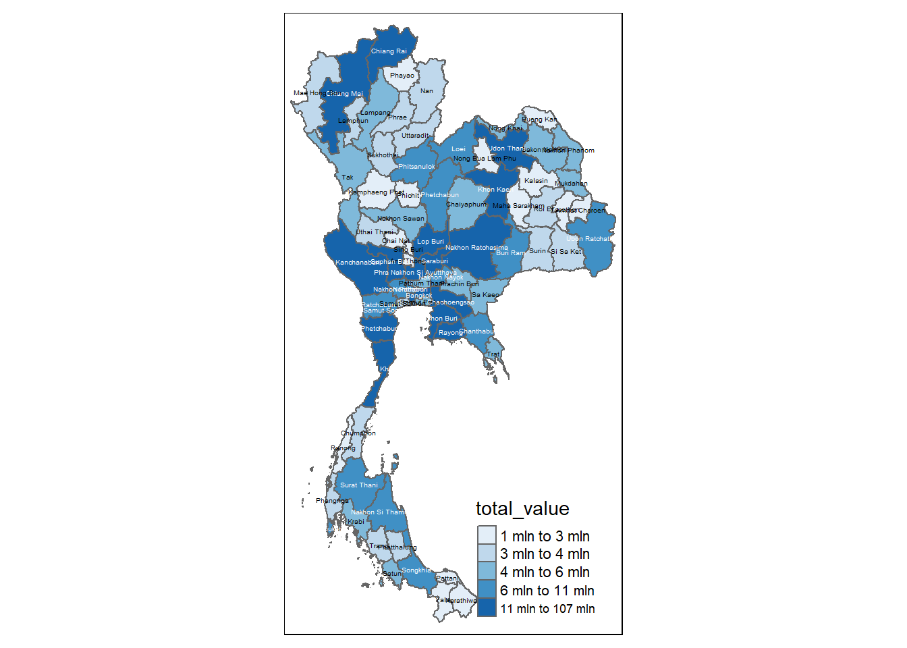
2.3.1.2 Revenue
We now take a look at the revenue generated by foreign and domestic tourists in Thailand
profit_foreigners=pro_tourism%>%
filter(variable=='net_profit_foreign')
profit_foreigners=st_as_sf(profit_foreigners)
# Create the interactive basemap
basemap <- tm_shape(profit_foreigners) +
tm_polygons(col = "total_value", palette = "Blues", style= 'jenks') +
tm_text("province_eng", size = 0.5)
# Display the interactive map
basemap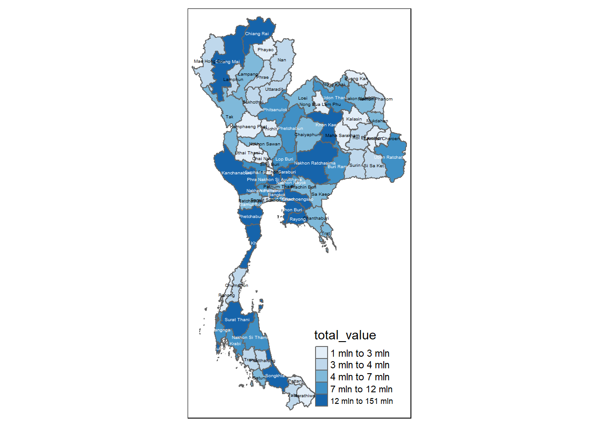
profit_domestic=pro_tourism%>%
filter(variable=='net_profit_thai')
profit_foreigners=st_as_sf(profit_domestic)
profit_domestic=st_as_sf(profit_domestic)
# Create the interactive basemap
basemap2 <- tm_shape(profit_domestic) +
tm_polygons(col = "total_value", palette = "Blues", style='jenks') +
tm_text("province_eng", size = 0.5)
# Display the interactive map
basemap2profit_all=pro_tourism%>%
filter(variable=='net_profit_all')
profit_all=st_as_sf(profit_all)
# Create the interactive basemap
basemap3 <- tm_shape(profit_all) +
tm_polygons(col = "total_value", palette = "Blues", style= 'jenks')
# Display the interactive map
basemap3Bangkok seems to be the most lucrative province overall.
basemap <- tm_shape(profit_domestic) +
tm_polygons() +
tm_text("province_eng", size=0.5)
gdppc <- qtm(profit_domestic, "total_value")
tmap_arrange(basemap, gdppc, asp=1, ncol=2)2.4 Spatial Analysis
We now implement the poly2nb() function of the spdep package to compute contiguity weight matrices for the study area selected.
Using this function, we are able to build a ‘neighbors list’ based on regions with contiguous boundaries.
In this function, we will pass an argument, ‘queen’, that can be set as either TRUE (default) or FALSE. If the ‘queen’ argument is not explicitly set to FALSE, the function returns a list of first order neighbors using the Queen criteria.
You may refer to the spdep package documentation here to learn more about its functions and arguments.
2.4.1 Spatial Weights
2.4.1.1 Computing Contiguity Spatial Weights
We use the poly2nb() function as shown in the code chunk below. Using this, we are able to compute a Queen contiguity weight matrix.
# Rook contiguity
wm_r <- poly2nb(profit_foreigners, queen=FALSE)
write_rds(wm_r, 'data/rds/wm_r_pro_foreign')
# Queen Contiguity
wm_q <- poly2nb(profit_foreigners, queen=TRUE)
write_rds(wm_q, 'data/rds/wm_q_pro_foreign')wm_r_pro_foreign=read_rds("data/rds/wm_r_pro_foreign")
summary(wm_r_pro_foreign)Neighbour list object:
Number of regions: 77
Number of nonzero links: 352
Percentage nonzero weights: 5.93692
Average number of links: 4.571429
1 region with no links:
48
2 disjoint connected subgraphs
Link number distribution:
0 1 2 3 4 5 6 7 8 9
1 1 5 17 15 17 10 5 4 2
1 least connected region:
71 with 1 link
2 most connected regions:
17 69 with 9 linkswm_q_pro_foreign=read_rds("data/rds/wm_q_pro_foreign")
summary(wm_q_pro_foreign)Neighbour list object:
Number of regions: 77
Number of nonzero links: 352
Percentage nonzero weights: 5.93692
Average number of links: 4.571429
1 region with no links:
48
2 disjoint connected subgraphs
Link number distribution:
0 1 2 3 4 5 6 7 8 9
1 1 5 17 15 17 10 5 4 2
1 least connected region:
71 with 1 link
2 most connected regions:
17 69 with 9 linksWe now repeat the same steps for Domestic tourists.
# Rook contiguity
wm_r <- poly2nb(profit_domestic, queen=FALSE)
write_rds(wm_r, 'data/rds/wm_r_pro_dom')
# Queen Contiguity
wm_q <- poly2nb(profit_domestic, queen=TRUE)
write_rds(wm_q, 'data/rds/wm_q_pro_dom')We now look at a summary of both using the code chunks below.
wm_r_pro_dom=read_rds("data/rds/wm_r_pro_dom")
summary(wm_r_pro_dom)Neighbour list object:
Number of regions: 77
Number of nonzero links: 352
Percentage nonzero weights: 5.93692
Average number of links: 4.571429
1 region with no links:
48
2 disjoint connected subgraphs
Link number distribution:
0 1 2 3 4 5 6 7 8 9
1 1 5 17 15 17 10 5 4 2
1 least connected region:
71 with 1 link
2 most connected regions:
17 69 with 9 linkswm_q_pro_dom=read_rds("data/rds/wm_q_pro_dom")
summary(wm_q_pro_dom)Neighbour list object:
Number of regions: 77
Number of nonzero links: 352
Percentage nonzero weights: 5.93692
Average number of links: 4.571429
1 region with no links:
48
2 disjoint connected subgraphs
Link number distribution:
0 1 2 3 4 5 6 7 8 9
1 1 5 17 15 17 10 5 4 2
1 least connected region:
71 with 1 link
2 most connected regions:
17 69 with 9 linksWe now check all tourists.
# Rook contiguity
wm_r <- poly2nb(profit_all, queen=FALSE)
write_rds(wm_r, 'data/rds/wm_r_pro_all')
# Queen Contiguity
wm_q <- poly2nb(profit_all, queen=TRUE)
write_rds(wm_q, 'data/rds/wm_q_pro_all')wm_r_pro_all=read_rds("data/rds/wm_r_pro_all")
summary(wm_r_pro_all)Neighbour list object:
Number of regions: 77
Number of nonzero links: 352
Percentage nonzero weights: 5.93692
Average number of links: 4.571429
1 region with no links:
48
2 disjoint connected subgraphs
Link number distribution:
0 1 2 3 4 5 6 7 8 9
1 1 5 17 15 17 10 5 4 2
1 least connected region:
71 with 1 link
2 most connected regions:
17 69 with 9 linkswm_q_pro_all=read_rds("data/rds/wm_q_pro_all")
summary(wm_q_pro_all)Neighbour list object:
Number of regions: 77
Number of nonzero links: 352
Percentage nonzero weights: 5.93692
Average number of links: 4.571429
1 region with no links:
48
2 disjoint connected subgraphs
Link number distribution:
0 1 2 3 4 5 6 7 8 9
1 1 5 17 15 17 10 5 4 2
1 least connected region:
71 with 1 link
2 most connected regions:
17 69 with 9 links2.4.1.2 Visualizing Contiguity Spatial Weights
A connectivity graph takes a point and displays a line to each neighboring point. We are working with polygons in this situation, so we need to ensure that our points are in order to produce our connectivity graphs.
Usually, the method of choice will be polygon centroids. We calculate using the sf package before moving onto the graphs. Getting latitude and longitude of the Polygon Centroids.
We need points to associate with each polygon before we can make our connectivity graph. It won’t be as simple as applying the st_centroid() function of the sf sf object: us.bound. We need the coordinates in a separate data-frame for this to work.
To do this, we will use a mapping function which will apply a given function to each element of a vector and returns a vector of the same length. Our input vector will be the geometry column of us.bound.
The function that we implement in this situation will be st_centroid().
We will be using the map_dbl variation of map from the purrr package.
We start by extracting the longitude and latitude values for foreign travellers.
longitude_profit_foreign= map_dbl(profit_foreigners$geometry, ~st_centroid(.x)[[1]])
latitude_profit_foreign= map_dbl(profit_foreigners$geometry, ~st_centroid(.x)[[2]])Now that we have the latitude and longitude values, we can use the cbind() function to put the longitude and latitude values into the same object, coords.
coords_profit_foreign <- cbind(longitude_profit_foreign, latitude_profit_foreign)We use the head() function to verify if coords is in the correct format.
head(coords_profit_foreign) longitude_profit_foreign latitude_profit_foreign
[1,] 104.7414 15.89261
[2,] 100.3485 14.62354
[3,] 100.6235 13.77183
[4,] 103.7109 18.14879
[5,] 102.9567 14.81998
[6,] 101.4254 13.60649longitude_profit_domestic= map_dbl(profit_domestic$geometry, ~st_centroid(.x)[[1]])
latitude_profit_domestic= map_dbl(profit_domestic$geometry, ~st_centroid(.x)[[2]])Now that we have the latitude and longitude values, we can use the cbind() function to put the longitude and latitude values into the same object, coords. We now create the coords object.
coords_profit_domestic=cbind(longitude_profit_domestic, latitude_profit_domestic)We use the head() function to verify if coords is in the correct format.
head(coords_profit_domestic) longitude_profit_domestic latitude_profit_domestic
[1,] 104.7414 15.89261
[2,] 100.3485 14.62354
[3,] 100.6235 13.77183
[4,] 103.7109 18.14879
[5,] 102.9567 14.81998
[6,] 101.4254 13.60649longitude_profit_all= map_dbl(profit_all$geometry, ~st_centroid(.x)[[1]])
latitude_profit_all= map_dbl(profit_all$geometry, ~st_centroid(.x)[[2]])We now create the coords object.
coords_profit_all <- cbind(longitude_profit_all, latitude_profit_all)
head(coords_profit_all) longitude_profit_all latitude_profit_all
[1,] 104.7414 15.89261
[2,] 100.3485 14.62354
[3,] 100.6235 13.77183
[4,] 103.7109 18.14879
[5,] 102.9567 14.81998
[6,] 101.4254 13.60649We can now visualize it using the plot() function as shown in the following code chunks.
plot(profit_foreigners$geometry, border="lightgrey")
plot(wm_r_pro_foreign, coords_profit_foreign, pch = 19, cex = 0.6, add = TRUE, col = "purple")
plot(profit_foreigners$geometry, border="lightgrey")
plot(wm_q_pro_foreign, coords_profit_foreign, pch = 19, cex = 0.6, add = TRUE, col = "purple")
plot(profit_domestic$geometry, border="lightgrey")
plot(wm_r_pro_dom, coords_profit_domestic, pch = 19, cex = 0.6, add = TRUE, col = "purple")
plot(profit_domestic$geometry, border="lightgrey")
plot(wm_q_pro_dom, coords_profit_foreign, pch = 19, cex = 0.6, add = TRUE, col = "purple")
plot(profit_all$geometry, border="lightgrey")
plot(wm_r_pro_all, coords_profit_all, pch = 19, cex = 0.6, add = TRUE, col = "purple")
plot(profit_all$geometry, border="lightgrey")
plot(wm_q_pro_all, coords_profit_foreign, pch = 19, cex = 0.6, add = TRUE, col = "purple")
2.4.1.3 Computing Distance Based Neighbors
In order to derive distance-based weight matrices, we will implement the dnearneigh() function of the spdep package.
This function identifies neighbors of region points by Euclidean Distance with a distance band with lower d1 and upper d2 bounds controlled by the bounds= argument.
If un-projected coordinates are used and either specified in the coordinates object x or with x as a two column matrix and longlat=TRUE, great circle distances in km will be calculated assuming the WGS84 reference ellipsoid.
2.4.1.3.1 Determining cut-off distance
We must first determine the upper limit for the distance band by using the steps shown below:
Find k Nearest Neighbours: Use
knearneigh()from thespdeppackage to get a matrix of indices for the k nearest neighbours of each point.Convert to Neighbours List: Convert the
knnobject returned byknearneigh()into a neighbours list of classnbusingknn2nb(). This list contains integer vectors with neighbour region number IDs.Calculate Edge Lengths: Use
nbdists()fromspdepto return the lengths of neighbour relationship edges. The function returns distances in the units of the coordinates if projected, otherwise in kilometers.Flatten the List: Remove the list structure of the returned object using
unlist()
We focus on ALL travellers as opposed to singling out Foreign and/or Domestic travellers for the following.
k1_pro_all <- knn2nb(knearneigh(coords_profit_all))
k1dists_pro_all <- unlist(nbdists(k1_pro_all, coords_profit_all, longlat = TRUE))
summary(k1dists_pro_all) Min. 1st Qu. Median Mean 3rd Qu. Max.
21.55 51.92 64.33 63.24 76.77 110.94 You could also do the below if you are interested in singling them out based on foreign and domestic travellers.
k1_pro_foreign <- knn2nb(knearneigh(coords_profit_foreign))
k1dists_pro_foreign <- unlist(nbdists(k1_pro_foreign, coords_profit_foreign, longlat = TRUE))
summary(k1dists_pro_foreign)From the output above, we can infer that the largest first nearest neighbor distance is just under 125KM. Using this value, 125KM, as the upper threshold gives certainty that all units will have at least one neighbor.
k1_pro_domestic <- knn2nb(knearneigh(coords_profit_domestic))
k1dists_pro_domestic <- unlist(nbdists(k1_pro_domestic, coords_profit_domestic, longlat = TRUE))
summary(k1dists_pro_domestic)2.4.1.3.2 Computing Distance Based Weight Matrix
We now implement the dnearneigh() function to compute the distance weight matrix.
wm_d62_pro_all <- dnearneigh(coords_profit_all, 0, 111, longlat = TRUE)
wm_d62_pro_allNeighbour list object:
Number of regions: 77
Number of nonzero links: 350
Percentage nonzero weights: 5.903188
Average number of links: 4.545455
2 disjoint connected subgraphsFrom the output above, we infer that there are 69 distinct regions, as we identified earlier. There are 368 connections between regions where the distance is within the threshold that we have set. 7.73% of all possible region pairs have a connection. On average, each region is connected to approximately 5.3 other regions.
We now use the combination of table() and card() functions from the spdep package to display the structure of the weight matrix.
table(profit_all$province_eng, card(wm_d62_pro_all))
1 2 3 4 5 6 7 8 9 10 11 12 13 14
Amnat Charoen 0 0 0 1 0 0 0 0 0 0 0 0 0 0
Ang Thong 0 0 0 0 0 0 0 0 0 0 1 0 0 0
Bangkok 0 0 0 0 0 0 0 0 0 0 0 1 0 0
Bueng Kan 0 1 0 0 0 0 0 0 0 0 0 0 0 0
Buri Ram 0 1 0 0 0 0 0 0 0 0 0 0 0 0
Chachoengsao 0 0 0 0 0 0 0 0 1 0 0 0 0 0
Chai Nat 0 0 0 0 0 0 1 0 0 0 0 0 0 0
Chaiyaphum 0 1 0 0 0 0 0 0 0 0 0 0 0 0
Chanthaburi 0 0 0 0 1 0 0 0 0 0 0 0 0 0
Chiang Mai 0 0 1 0 0 0 0 0 0 0 0 0 0 0
Chiang Rai 1 0 0 0 0 0 0 0 0 0 0 0 0 0
Chon Buri 0 0 0 0 0 1 0 0 0 0 0 0 0 0
Chumphon 1 0 0 0 0 0 0 0 0 0 0 0 0 0
Kalasin 0 0 0 1 0 0 0 0 0 0 0 0 0 0
Kamphaeng Phet 0 0 0 0 1 0 0 0 0 0 0 0 0 0
Kanchanaburi 0 1 0 0 0 0 0 0 0 0 0 0 0 0
Khon Kaen 0 0 1 0 0 0 0 0 0 0 0 0 0 0
Krabi 0 0 0 0 1 0 0 0 0 0 0 0 0 0
Lampang 0 0 1 0 0 0 0 0 0 0 0 0 0 0
Lamphun 0 1 0 0 0 0 0 0 0 0 0 0 0 0
Loei 1 0 0 0 0 0 0 0 0 0 0 0 0 0
Lop Buri 0 0 0 0 0 0 1 0 0 0 0 0 0 0
Mae Hong Son 1 0 0 0 0 0 0 0 0 0 0 0 0 0
Maha Sarakham 0 0 1 0 0 0 0 0 0 0 0 0 0 0
Mukdahan 0 0 0 0 1 0 0 0 0 0 0 0 0 0
Nakhon Nayok 0 0 0 0 0 0 0 0 0 1 0 0 0 0
Nakhon Pathom 0 0 0 0 0 0 0 0 0 1 0 0 0 0
Nakhon Phanom 0 1 0 0 0 0 0 0 0 0 0 0 0 0
Nakhon Ratchasima 1 0 0 0 0 0 0 0 0 0 0 0 0 0
Nakhon Sawan 0 0 0 0 0 1 0 0 0 0 0 0 0 0
Nakhon Si Thammarat 0 0 0 1 0 0 0 0 0 0 0 0 0 0
Nan 0 1 0 0 0 0 0 0 0 0 0 0 0 0
Narathiwat 0 1 0 0 0 0 0 0 0 0 0 0 0 0
Nong Bua Lam Phu 0 0 0 1 0 0 0 0 0 0 0 0 0 0
Nong Khai 0 0 1 0 0 0 0 0 0 0 0 0 0 0
Nonthaburi 0 0 0 0 0 0 0 0 0 0 0 0 1 0
Pathum Thani 0 0 0 0 0 0 0 0 0 0 0 0 0 1
Pattani 0 0 1 0 0 0 0 0 0 0 0 0 0 0
Phangnga 0 0 1 0 0 0 0 0 0 0 0 0 0 0
Phatthalung 0 0 0 1 0 0 0 0 0 0 0 0 0 0
Phayao 0 1 0 0 0 0 0 0 0 0 0 0 0 0
Phetchabun 0 0 1 0 0 0 0 0 0 0 0 0 0 0
Phetchaburi 0 0 0 1 0 0 0 0 0 0 0 0 0 0
Phichit 0 0 0 1 0 0 0 0 0 0 0 0 0 0
Phitsanulok 0 0 0 1 0 0 0 0 0 0 0 0 0 0
Phra Nakhon Si Ayutthaya 0 0 0 0 0 0 0 0 0 0 0 0 1 0
Phrae 0 0 0 1 0 0 0 0 0 0 0 0 0 0
Phuket 0 1 0 0 0 0 0 0 0 0 0 0 0 0
Prachin Buri 0 0 0 0 0 1 0 0 0 0 0 0 0 0
Prachuap Khiri Khan 1 0 0 0 0 0 0 0 0 0 0 0 0 0
Ranong 0 1 0 0 0 0 0 0 0 0 0 0 0 0
Ratchaburi 0 0 0 0 1 0 0 0 0 0 0 0 0 0
Rayong 0 0 1 0 0 0 0 0 0 0 0 0 0 0
Roi Et 0 0 0 0 1 0 0 0 0 0 0 0 0 0
Sa Kaeo 0 0 1 0 0 0 0 0 0 0 0 0 0 0
Sakon Nakhon 0 0 0 1 0 0 0 0 0 0 0 0 0 0
Samut Prakan 0 0 0 0 0 0 0 0 0 1 0 0 0 0
Samut Sakhon 0 0 0 0 0 0 0 0 1 0 0 0 0 0
Samut Songkhram 0 0 0 0 0 0 0 1 0 0 0 0 0 0
Saraburi 0 0 0 0 0 0 0 0 1 0 0 0 0 0
Satun 0 0 1 0 0 0 0 0 0 0 0 0 0 0
Si Sa Ket 0 1 0 0 0 0 0 0 0 0 0 0 0 0
Sing Buri 0 0 0 0 0 0 0 0 0 1 0 0 0 0
Songkhla 0 0 1 0 0 0 0 0 0 0 0 0 0 0
Sukhothai 0 0 0 1 0 0 0 0 0 0 0 0 0 0
Suphan Buri 0 0 0 0 0 0 0 0 1 0 0 0 0 0
Surat Thani 0 0 0 1 0 0 0 0 0 0 0 0 0 0
Surin 0 1 0 0 0 0 0 0 0 0 0 0 0 0
Tak 1 0 0 0 0 0 0 0 0 0 0 0 0 0
Trang 0 0 0 1 0 0 0 0 0 0 0 0 0 0
Trat 1 0 0 0 0 0 0 0 0 0 0 0 0 0
Ubon Ratchathani 0 1 0 0 0 0 0 0 0 0 0 0 0 0
Udon Thani 0 0 1 0 0 0 0 0 0 0 0 0 0 0
Uthai Thani 0 0 0 0 0 1 0 0 0 0 0 0 0 0
Uttaradit 0 0 1 0 0 0 0 0 0 0 0 0 0 0
Yala 0 1 0 0 0 0 0 0 0 0 0 0 0 0
Yasothon 0 0 1 0 0 0 0 0 0 0 0 0 0 0Next, we implement the n.comp.nb() function to identify the number of connected components in a neighbor list object of class nb.
Note: A connected component is a subset of regions where each region is reachable from any other region within the same subset. The function returns an object that includes the number of connected components (nc) and a vector indicating the component membership for each region.
n_comp_pro_all<- n.comp.nb(wm_d62_pro_all)
n_comp_pro_all$nc[1] 2table(n_comp_pro_all$comp.id)
1 2
63 14 2.4.1.3.3 Plotting fixed distance weight matrix
We now plot the distance weight matrix using the plot() function.
plot(profit_all$geometry, border="lightgrey")
plot(wm_d62_pro_all, coords_profit_all, add=TRUE)
plot(k1_pro_all, coords_profit_all, add=TRUE, col="purple", length=0.08)
As identified earlier, we see two distinct groups. The upper 63 and the bottom 14.
par(mfrow=c(1,2))
plot(profit_all$geometry, border="lightgrey", main="1st nearest neighbours")
plot(k1_pro_all, coords_profit_foreign, add=TRUE, col="red", length=0.08)
plot(profit_all$geometry, border="lightgrey", main="Distance link")
plot(wm_d62_pro_all, coords_profit_foreign, add=TRUE, pch = 19, cex = 0.6)
2.4.1.4 Weights based on Inversed Distance Weighting (IDW)
We first compute the distances between areas by implementing the nbdists() function of the spdep package.
dist_pro_all <- nbdists(wm_q_pro_all, coords_profit_all, longlat = TRUE)
ids_pro_all <- lapply(dist_pro_all, function(x) 1/(x))
ids_pro_all[[1]]
[1] 0.01283122 0.01137165 0.02317374
[[2]]
[1] 0.01242005 0.02756509 0.03127482 0.02029286
[[3]]
[1] 0.01128043 0.01701948 0.03322088 0.03024035 0.04641391 0.02007407
[[4]]
[1] 0.008785487 0.010451301 0.011784417
[[5]]
[1] 0.005542535 0.007549986 0.010821690 0.007509592 0.013226931
[[6]]
[1] 0.011280434 0.009026604 0.019262215 0.013713812 0.010525478 0.018323726
[7] 0.010089340 0.012920254
[[7]]
[1] 0.01608311 0.02368766 0.01681858 0.01570532
[[8]]
[1] 0.010963897 0.007064074 0.008134706 0.013026280
[[9]]
[1] 0.009026604 0.009398570 0.013102472 0.009765844 0.013223766
[[10]]
[1] 0.005984037 0.010253006 0.012763865 0.013589149 0.004349372
[[11]]
[1] 0.005984037 0.005799456 0.013165076
[[12]]
[1] 0.01926221 0.00939857 0.02240885
[[13]]
[1] 0.005327427 0.017306975 0.007000767
[[14]]
[1] 0.008769672 0.011775171 0.010437208 0.012343675 0.011493123 0.008361253
[[15]]
[1] 0.010254426 0.011527636 0.007714179 0.009533663 0.011111643
[[16]]
[1] 0.007385957 0.007716901 0.010982604 0.004211749 0.010358229
[[17]]
[1] 0.005542535 0.010963897 0.008769672 0.006691737 0.012916807 0.005943019
[7] 0.011054506 0.006514320 0.008588872
[[18]]
[1] 0.01132654 0.01135774 0.00997081 0.01085922
[[19]]
[1] 0.010253006 0.005799456 0.015806184 0.008104541 0.016638036 0.008359249
[7] 0.005157708
[[20]]
[1] 0.012763865 0.015806184 0.006403244
[[21]]
[1] 0.006691737 0.013301389 0.007140588 0.007375029 0.007976693 0.007671985
[[22]]
[1] 0.012420048 0.007064074 0.007670177 0.009705201 0.007575615 0.010664800
[7] 0.018342110 0.015632633
[[23]]
[1] 0.013589149 0.004073493
[[24]]
[1] 0.007549986 0.011775171 0.012916807 0.014293885 0.007462094
[[25]]
[1] 0.012831217 0.010437208 0.010934747 0.009660859 0.008504967 0.013119927
[[26]]
[1] 0.013713812 0.007685469 0.018047546 0.018187683 0.020717010
[[27]]
[1] 0.017019481 0.007385957 0.031941419 0.015333035 0.014028638 0.024413177
[7] 0.012579923
[[28]]
[1] 0.008785487 0.010934747 0.015545066
[[29]]
[1] 0.010821690 0.008134706 0.005943019 0.007670177 0.007685469 0.008917878
[7] 0.007605151 0.008117703
[[30]]
[1] 0.016083111 0.010254426 0.009705201 0.007982010 0.014915995 0.011395871
[7] 0.005405036 0.012326369
[[31]]
[1] 0.011326537 0.009956219 0.005544296 0.009359481 0.010554311
[[32]]
[1] 0.012495409 0.009206376 0.007880812
[[33]]
[1] 0.01359979 0.01841909
[[34]]
[1] 0.01105451 0.01330139 0.01530233
[[35]]
[1] 0.010451301 0.007140588 0.008232097 0.017483864
[[36]]
[1] 0.03322088 0.03194142 0.02860548 0.02049667
[[37]]
[1] 0.03024035 0.01052548 0.01804755 0.02860548 0.02835278 0.01391843
[[38]]
[1] 0.01359979 0.01090219 0.01634790
[[39]]
[1] 0.011357744 0.006830201 0.011741631
[[40]]
[1] 0.009956219 0.013192981 0.012040582 0.019039684
[[41]]
[1] 0.013165076 0.008104541 0.012495409 0.008669969
[[42]]
[1] 0.013026280 0.006514320 0.007375029 0.007575615 0.007982010 0.011614531
[7] 0.009899588
[[43]]
[1] 0.009013905 0.015334899 0.016262271
[[44]]
[1] 0.01152764 0.01491600 0.01161453 0.01209489
[[45]]
[1] 0.007714179 0.007976693 0.009899588 0.012094889 0.010632695 0.011816759
[[46]]
[1] 0.02756509 0.01066480 0.01533303 0.02049667 0.02835278 0.01630089 0.01339948
[[47]]
[1] 0.016638036 0.009206376 0.008669969 0.009069811 0.014433186
[[48]]
numeric(0)
[[49]]
[1] 0.018323726 0.018187683 0.008917878 0.012788384
[[50]]
[1] 0.005327427 0.009013905
[[51]]
[1] 0.017306975 0.006830201 0.009085630
[[52]]
[1] 0.007716901 0.014028638 0.015334899 0.014563573 0.023042875
[[53]]
[1] 0.01310247 0.02240885
[[54]]
[1] 0.012343675 0.014293885 0.009660859 0.007581777 0.008645806 0.017784128
[[55]]
[1] 0.007509592 0.010089340 0.009765844 0.007605151 0.012788384
[[56]]
[1] 0.011784417 0.011493123 0.008504967 0.015545066 0.008232097 0.009781624
[[57]]
[1] 0.04641391 0.01292025
[[58]]
[1] 0.02007407 0.02441318 0.01456357 0.02941852
[[59]]
[1] 0.01626227 0.02304288 0.02941852
[[60]]
[1] 0.018342110 0.020717010 0.008117703 0.013918429 0.016300886
[[61]]
[1] 0.01319298 0.01448029 0.01168217
[[62]]
[1] 0.03127482 0.02368766 0.01563263 0.01139587 0.01688512
[[63]]
[1] 0.007581777 0.013015715 0.011409610 0.008690817
[[64]]
[1] 0.005544296 0.010902192 0.012040582 0.014480293 0.008955556
[[65]]
[1] 0.009533663 0.008359249 0.010632695 0.009069811 0.008697288 0.009934394
[[66]]
[1] 0.02029286 0.01681858 0.01098260 0.01257992 0.01339948 0.01688512 0.01076819
[[67]]
[1] 0.007000767 0.009970810 0.009359481 0.011741631 0.009085630
[[68]]
[1] 0.013226931 0.007462094 0.008645806 0.013015715
[[69]]
[1] 0.004349372 0.011111643 0.004211749 0.005157708 0.006403244 0.004073493
[7] 0.005405036 0.008697288 0.005949594
[[70]]
[1] 0.01085922 0.01055431 0.01903968 0.01168217
[[71]]
[1] 0.01322377
[[72]]
[1] 0.011371651 0.011409610 0.008739397
[[73]]
[1] 0.008361253 0.008588872 0.007671985 0.015302325 0.017483864 0.009781624
[[74]]
[1] 0.015705321 0.010358229 0.012326369 0.010768191 0.005949594
[[75]]
[1] 0.007880812 0.011816759 0.014433186 0.009934394
[[76]]
[1] 0.018419095 0.016347902 0.008955556
[[77]]
[1] 0.023173744 0.013119927 0.017784128 0.008690817 0.0087393972.4.1.5 Row-Standardized Weights Matrix
We now need to assign weights to each neighboring polygon. We use equal weights (style=“W”), where each neighboring polygon is assigned a weight of 1 divided by the number of neighbors.
This means each neighboring county’s weight is calculated as 1/(# of neighbors), and these weights are then used to sum the weighted income values.
While this method is intuitive for summarizing neighbors’ values, it has a drawback: polygons at the edges of the study area may rely on fewer neighbors, potentially skewing the spatial autocorrelation results.
Note: For simplicity, we’ll use the style=“W” option in this example, but be aware that more robust options, such as style=“B”, are available.
rswm_q_pro_all <- nb2listw(wm_q_pro_all, style="W", zero.policy = TRUE)
rswm_q_pro_allCharacteristics of weights list object:
Neighbour list object:
Number of regions: 77
Number of nonzero links: 352
Percentage nonzero weights: 5.93692
Average number of links: 4.571429
1 region with no links:
48
2 disjoint connected subgraphs
Weights style: W
Weights constants summary:
n nn S0 S1 S2
W 76 5776 76 36.26113 315.652Setting the argument zero.policy to TRUE allows for lists of non-neighbors. This should be used with caution as users may not be aware of missing neighbors in their data however setting zero,policy to FALSE would return an error.
The nb2listw() function requires an input of class nb, representing a neighborhood object. The function’s two key arguments are style and zero.policy.
The
styleargument defines how the weights are calculated. It can take several values:"B": Binary coding, where weights are either 0 or 1."W": Row-standardized, where the sum of weights across all neighbors equals 1."C": Globally standardized, where the sum of weights across all neighbors equals the total number of neighbors."U": A variation of"C", where weights are normalized by the number of neighbors."S": A variance-stabilizing scheme proposed by Tiefelsdorf et al. (1999), which adjusts weights based on the number of neighbors.
The
zero.policyargument, when set toTRUE, handles regions with no neighbors by assigning them a weight vector of zero length. This results in a spatial lag value of zero for regions without neighbors, which may or may not be a suitable assumption depending on the context. For such regions, the spatially lagged value is computed as the sum of the products of a zero vector with any numerical vectorx, effectively setting the lagged value to zero for those regions.
The code chunk below is implemented to check the weights of the first polygons three neighbors type:
rswm_q_pro_all$weights[10][[1]]
[1] 0.2 0.2 0.2 0.2 0.2Each neighbor is assigned a 0.33 of the total weight. This means that when R computes the average neighboring income values, each neighbor’s income will be multiplied by 0.125 before being tallied.
Using the same method, we derive a row standardized distance weight matrix by using the code chunk below.
rswm_ids_pro_all <- nb2listw(wm_q_pro_all, glist=ids_pro_all, style="B", zero.policy=TRUE)
rswm_ids_pro_allCharacteristics of weights list object:
Neighbour list object:
Number of regions: 77
Number of nonzero links: 352
Percentage nonzero weights: 5.93692
Average number of links: 4.571429
1 region with no links:
48
2 disjoint connected subgraphs
Weights style: B
Weights constants summary:
n nn S0 S1 S2
B 76 5776 4.455002 0.1398557 1.2775782.4.1.6 Application of Spatial Weight Matrix
We now create four different spatial lagged variables:
spatial lag with row-standardized weights
spatial lag as a sum of neighbouring values
spatial window average
spatial window sum
2.4.1.6.1 Spatial Lag With Row-Standardized Weights
We now compute the average neighbor profit value for each polygon. We often refer to these values as Spatially Lagged Values.
pro_all.lag <- lag.listw(rswm_q_pro_all, profit_all$total_value)
pro_all.lag [1] 9007.423 19159.065 11101.550 8973.007 24293.010 302252.150
[7] 8665.890 33444.018 124435.210 29312.576 92835.357 34304.183
[13] 91592.703 14972.587 13366.528 12507.090 15979.493 70759.800
[19] 57026.211 97289.700 21277.573 20322.484 139223.575 13988.434
[25] 3834.508 21779.618 287145.446 6147.503 17336.924 9257.597
[31] 91896.958 5598.447 5085.440 26715.993 12217.217 478136.312
[37] 325390.595 41792.287 109798.273 47134.970 31127.397 16132.914
[43] 44202.087 15592.220 9604.080 12013.216 8410.936 0.000
[49] 25648.827 49365.460 81625.793 38274.228 252584.040 4651.505
[55] 23940.906 10164.760 931135.130 470628.610 32719.887 27702.102
[61] 45928.900 9756.974 7336.990 14652.468 11860.260 21188.117
[67] 59269.662 6582.415 44498.824 57223.858 21508.900 2591.133
[73] 12899.063 25574.698 11889.023 39961.413 6954.400We can append the spatially lagged profit values onto our profit_foreigners sf data-frame by using the code chunk shown below.
lag.list_pro_all <- list(profit_all$province_eng, lag.listw(rswm_q_pro_all, profit_all$total_value))
lag.res_pro_all <- as.data.frame(lag.list_pro_all)
colnames(lag.res_pro_all) <- c("province_eng", "lag Profit")
profit_all <- left_join(profit_all,lag.res_pro_all)We now plot the actual profit and spatial lag profits side by side to facilitate comparison.
pro_all <- qtm(profit_all, "total_value")
lag_pro_all <- qtm(profit_all, "lag Profit")
tmap_arrange(pro_all, lag_pro_all, asp=1, ncol=2)
We see a difference in the surrounding regions of Bangkok as well as Mae Hong Son, all of which are in a higher band as compared to the non-spatially lagged values.
2.4.1.6.2 Spatial Window Sum
The spatial window sum is the counter part of the window average, but without using row-standardized weights.
To add the diagonal element to the neighbour list, we just need to use include.self() from spdep.
wm_qs_profit <- include.self(wm_q_pro_all)
wm_qs_profitNeighbour list object:
Number of regions: 77
Number of nonzero links: 429
Percentage nonzero weights: 7.235622
Average number of links: 5.571429
2 disjoint connected subgraphsWe now assign binary weights to the neighbour structure that includes the diagonal element.
b_weights <- lapply(wm_qs_profit, function(x) 0*x + 1)
b_weights[1][[1]]
[1] 1 1 1 1Notice that now [1] has four neighbours instead of three.
Again, we use nb2listw() and glist() to explicitly assign weight values.
b_weights2 <- nb2listw(wm_qs_profit,
glist = b_weights,
style = "B")
b_weights2Characteristics of weights list object:
Neighbour list object:
Number of regions: 77
Number of nonzero links: 429
Percentage nonzero weights: 7.235622
Average number of links: 5.571429
2 disjoint connected subgraphs
Weights style: B
Weights constants summary:
n nn S0 S1 S2
B 77 5929 429 858 10572With our newly obtained weight structure, we can compute the lag variable with lag.listw().
w_sum_profit <- list(profit_all$province_eng, lag.listw(b_weights2, profit_all$total_value))
w_sum_profit[[1]]
[1] "Amnat Charoen" "Ang Thong"
[3] "Bangkok" "Bueng Kan"
[5] "Buri Ram" "Chachoengsao"
[7] "Chai Nat" "Chaiyaphum"
[9] "Chanthaburi" "Chiang Mai"
[11] "Chiang Rai" "Chon Buri"
[13] "Chumphon" "Kalasin"
[15] "Kamphaeng Phet" "Kanchanaburi"
[17] "Khon Kaen" "Krabi"
[19] "Lampang" "Lamphun"
[21] "Loei" "Lop Buri"
[23] "Mae Hong Son" "Maha Sarakham"
[25] "Mukdahan" "Nakhon Nayok"
[27] "Nakhon Pathom" "Nakhon Phanom"
[29] "Nakhon Ratchasima" "Nakhon Sawan"
[31] "Nakhon Si Thammarat" "Nan"
[33] "Narathiwat" "Nong Bua Lam Phu"
[35] "Nong Khai" "Nonthaburi"
[37] "Pathum Thani" "Pattani"
[39] "Phangnga" "Phatthalung"
[41] "Phayao" "Phetchabun"
[43] "Phetchaburi" "Phichit"
[45] "Phitsanulok" "Phra Nakhon Si Ayutthaya"
[47] "Phrae" "Phuket"
[49] "Prachin Buri" "Prachuap Khiri Khan"
[51] "Ranong" "Ratchaburi"
[53] "Rayong" "Roi Et"
[55] "Sa Kaeo" "Sakon Nakhon"
[57] "Samut Prakan" "Samut Sakhon"
[59] "Samut Songkhram" "Saraburi"
[61] "Satun" "Sing Buri"
[63] "Si Sa Ket" "Songkhla"
[65] "Sukhothai" "Suphan Buri"
[67] "Surat Thani" "Surin"
[69] "Tak" "Trang"
[71] "Trat" "Ubon Ratchathani"
[73] "Udon Thani" "Uthai Thani"
[75] "Uttaradit" "Yala"
[77] "Yasothon"
[[2]]
[1] 28097.37 79192.91 1913576.73 29909.72 136534.87 2433320.03
[7] 38121.86 139235.28 643684.95 406608.58 374063.84 586571.73
[13] 289734.73 92660.56 71376.42 140404.50 185056.48 448843.17
[19] 412605.43 296679.86 139827.93 177205.10 292818.10 72690.70
[25] 31487.63 125871.67 2024146.13 25091.82 194157.28 86400.51
[31] 493349.14 25984.59 15352.52 81044.08 62167.35 1923750.63
[37] 1960007.44 127715.99 403421.46 194709.02 129548.01 135378.31
[43] 216380.56 66434.12 80661.94 127878.45 48395.30 830781.13
[49] 114956.40 209918.18 252574.11 201473.43 571268.90 31558.72
[55] 134561.54 67959.79 1876296.40 1886797.51 109476.37 156618.92
[61] 160844.67 51205.00 34209.58 185625.81 80150.32 164121.78
[67] 452242.43 33486.24 418890.87 248149.52 63765.11 24478.41
[73] 104138.83 131972.23 52972.39 127715.99 36608.68Next, we will convert the lag variable listw object into a data.frame by using as.data.frame().
w_sum_profit.res <- as.data.frame(w_sum_profit)
colnames(w_sum_profit.res) <- c("province_eng", "w_sum Profit")Do note that the second command line on the code chunk above renames the field names of w_sum_profit.res object into province_eng and w_sum Profit respectively.
Next, the code chunk below will be used to append w_sum Profit values onto our profit sf data.frame by using left_join() of dplyr package.
profit_all <- left_join(profit_all, w_sum_profit.res)To compare the values of lag Profit and Spatial window average, the kable() function of the Knitr package is used to prepare a table using the code chunk below.
profit_all %>%
select("province_eng", "total_value", "w_sum Profit") %>%
kable()| province_eng | total_value | w_sum Profit | geometry |
|---|---|---|---|
| Amnat Charoen | 1075.10 | 28097.37 | MULTIPOLYGON (((104.9598 16… |
| Ang Thong | 2556.65 | 79192.91 | MULTIPOLYGON (((100.3332 14… |
| Bangkok | 1846967.43 | 1913576.73 | MULTIPOLYGON (((100.6139 13… |
| Bueng Kan | 2990.70 | 29909.72 | MULTIPOLYGON (((103.405 18…. |
| Buri Ram | 15069.82 | 136534.87 | MULTIPOLYGON (((102.9303 15… |
| Chachoengsao | 15302.83 | 2433320.03 | MULTIPOLYGON (((101.0612 13… |
| Chai Nat | 3458.30 | 38121.86 | MULTIPOLYGON (((100.1199 15… |
| Chaiyaphum | 5459.21 | 139235.28 | MULTIPOLYGON (((101.5603 16… |
| Chanthaburi | 21508.90 | 643684.95 | MULTIPOLYGON (((102.2517 12… |
| Chiang Mai | 260045.70 | 406608.58 | MULTIPOLYGON (((99.52512 20… |
| Chiang Rai | 95557.77 | 374063.84 | MULTIPOLYGON (((99.96093 20… |
| Chon Buri | 483659.18 | 586571.73 | MULTIPOLYGON (((100.9719 12… |
| Chumphon | 14956.62 | 289734.73 | MULTIPOLYGON (((99.19067 10… |
| Kalasin | 2825.04 | 92660.56 | MULTIPOLYGON (((103.584 17…. |
| Kamphaeng Phet | 4543.78 | 71376.42 | MULTIPOLYGON (((99.48875 16… |
| Kanchanaburi | 77869.05 | 140404.50 | MULTIPOLYGON (((98.58631 15… |
| Khon Kaen | 41241.04 | 185056.48 | MULTIPOLYGON (((102.7072 17… |
| Krabi | 165803.97 | 448843.17 | MULTIPOLYGON (((99.11329 7…. |
| Lampang | 13421.95 | 412605.43 | MULTIPOLYGON (((99.58445 19… |
| Lamphun | 4810.76 | 296679.86 | MULTIPOLYGON (((99.18821 18… |
| Loei | 12162.49 | 139827.93 | MULTIPOLYGON (((102.095 18…. |
| Lop Buri | 14625.23 | 177205.10 | MULTIPOLYGON (((101.3453 15… |
| Mae Hong Son | 14370.95 | 292818.10 | MULTIPOLYGON (((98.0591 19…. |
| Maha Sarakham | 2748.53 | 72690.70 | MULTIPOLYGON (((103.1562 16… |
| Mukdahan | 8480.58 | 31487.63 | MULTIPOLYGON (((104.2527 16… |
| Nakhon Nayok | 16973.58 | 125871.67 | MULTIPOLYGON (((101.2827 14… |
| Nakhon Pathom | 14128.01 | 2024146.13 | MULTIPOLYGON (((100.2231 14… |
| Nakhon Phanom | 6649.31 | 25091.82 | MULTIPOLYGON (((104.192 18…. |
| Nakhon Ratchasima | 55461.89 | 194157.28 | MULTIPOLYGON (((102.3144 15… |
| Nakhon Sawan | 12339.73 | 86400.51 | MULTIPOLYGON (((100.0266 16… |
| Nakhon Si Thammarat | 33864.35 | 493349.14 | MULTIPOLYGON (((99.77467 9…. |
| Nan | 9189.25 | 25984.59 | MULTIPOLYGON (((100.8948 19… |
| Narathiwat | 5181.64 | 15352.52 | MULTIPOLYGON (((101.6323 6…. |
| Nong Bua Lam Phu | 896.10 | 81044.08 | MULTIPOLYGON (((102.2866 17… |
| Nong Khai | 13298.48 | 62167.35 | MULTIPOLYGON (((103.2985 18… |
| Nonthaburi | 11205.38 | 1923750.63 | MULTIPOLYGON (((100.3415 14… |
| Pathum Thani | 7663.87 | 1960007.44 | MULTIPOLYGON (((100.8916 14… |
| Pattani | 2339.13 | 127715.99 | MULTIPOLYGON (((101.2827 6…. |
| Phangnga | 74026.64 | 403421.46 | MULTIPOLYGON (((98.61471 7…. |
| Phatthalung | 6169.14 | 194709.02 | MULTIPOLYGON (((99.96416 7…. |
| Phayao | 5038.42 | 129548.01 | MULTIPOLYGON (((100.4195 19… |
| Phetchabun | 22447.91 | 135378.31 | MULTIPOLYGON (((101.3987 17… |
| Phetchaburi | 83774.30 | 216380.56 | MULTIPOLYGON (((99.75869 13… |
| Phichit | 4065.24 | 66434.12 | MULTIPOLYGON (((100.2165 16… |
| Phitsanulok | 23037.46 | 80661.94 | MULTIPOLYGON (((101.0033 17… |
| Phra Nakhon Si Ayutthaya | 43785.94 | 127878.45 | MULTIPOLYGON (((100.5131 14… |
| Phrae | 6340.62 | 48395.30 | MULTIPOLYGON (((100.1597 18… |
| Phuket | 830781.13 | 830781.13 | MULTIPOLYGON (((98.31437 7…. |
| Prachin Buri | 12361.09 | 114956.40 | MULTIPOLYGON (((101.4881 14… |
| Prachuap Khiri Khan | 111187.26 | 209918.18 | MULTIPOLYGON (((99.56326 11… |
| Ranong | 7696.73 | 252574.11 | MULTIPOLYGON (((98.35294 9…. |
| Ratchaburi | 10102.29 | 201473.43 | MULTIPOLYGON (((99.8821 13…. |
| Rayong | 66100.82 | 571268.90 | MULTIPOLYGON (((101.4421 12… |
| Roi Et | 3649.69 | 31558.72 | MULTIPOLYGON (((104.314 16…. |
| Sa Kaeo | 14857.01 | 134561.54 | MULTIPOLYGON (((102.1877 14… |
| Sakon Nakhon | 6971.23 | 67959.79 | MULTIPOLYGON (((103.5404 18… |
| Samut Prakan | 14026.14 | 1876296.40 | MULTIPOLYGON (((100.7306 13… |
| Samut Sakhon | 4283.07 | 1886797.51 | MULTIPOLYGON (((100.3091 13… |
| Samut Songkhram | 11316.71 | 109476.37 | MULTIPOLYGON (((100.0116 13… |
| Saraburi | 18108.41 | 156618.92 | MULTIPOLYGON (((101.3994 15… |
| Satun | 23057.97 | 160844.67 | MULTIPOLYGON (((100.0903 6…. |
| Sing Buri | 2420.13 | 51205.00 | MULTIPOLYGON (((100.3691 15… |
| Si Sa Ket | 4861.62 | 34209.58 | MULTIPOLYGON (((104.1052 15… |
| Songkhla | 112363.47 | 185625.81 | MULTIPOLYGON (((100.5973 7…. |
| Sukhothai | 8988.76 | 80150.32 | MULTIPOLYGON (((99.60051 17… |
| Suphan Buri | 15804.96 | 164121.78 | MULTIPOLYGON (((99.37118 15… |
| Surat Thani | 155894.12 | 452242.43 | MULTIPOLYGON (((99.96396 9…. |
| Surin | 7156.58 | 33486.24 | MULTIPOLYGON (((103.1336 15… |
| Tak | 18401.45 | 418890.87 | MULTIPOLYGON (((97.97318 17… |
| Trang | 19254.09 | 248149.52 | MULTIPOLYGON (((99.47579 6…. |
| Trat | 42256.21 | 63765.11 | MULTIPOLYGON (((102.5216 11… |
| Ubon Ratchathani | 16705.01 | 24478.41 | MULTIPOLYGON (((105.0633 16… |
| Udon Thani | 26744.45 | 104138.83 | MULTIPOLYGON (((102.0581 18… |
| Uthai Thani | 4098.74 | 131972.23 | MULTIPOLYGON (((99.13905 15… |
| Uttaradit | 5416.30 | 52972.39 | MULTIPOLYGON (((101.0924 18… |
| Yala | 7831.75 | 127715.99 | MULTIPOLYGON (((101.2927 6…. |
| Yasothon | 1836.68 | 36608.68 | MULTIPOLYGON (((104.3952 16… |
We now plot the actual profit and w_sum_profit maps next to each other using the qtm() function of the tmap package.
# Create the first map for 'total_value' using Jenks classification
profit_map <- tm_shape(profit_all) +
tm_polygons("total_value", style = "jenks", palette = "Blues", title = "Total Value") +
tm_layout(legend.outside = TRUE)
# Create the second map for 'w_sum Profit' using Jenks classification
w_sum_profit_map <- tm_shape(profit_all) +
tm_polygons("w_sum Profit", style = "jenks", palette = "Reds", title = "W Sum Profit") +
tm_layout(legend.outside = TRUE)
tmap_arrange(profit_map, w_sum_profit_map, ncol = 2)2.4.2 Global Measures of Spatial Autocorrelation
We now conduct Moran’s I statistics testing by using the moran.test() function of the spdep package.
Statistical tests are conducted at a 5% significance level.
The hypotheses for the test are as follows:
H0: Regions with similar levels of profit from tourism are randomly distributed.
H1: Regions with similar levels of profit from tourism are not randomly distributed and exhibit spatial clustering.
moran.test(profit_all$total_value,
listw=rswm_q_pro_all,
zero.policy = TRUE,
na.action=na.omit)
Moran I test under randomisation
data: profit_all$total_value
weights: rswm_q_pro_all
n reduced by no-neighbour observations
Moran I statistic standard deviate = -0.38565, p-value = 0.6501
alternative hypothesis: greater
sample estimates:
Moran I statistic Expectation Variance
-0.032059693 -0.013333333 0.002357817 From the output above, we can infer the following:
The p-value 0.7224>0.05, indicating that the observed spatial autocorrelation is not statistically significant.
Moran’s I statistic: The observed value of -0.037 indicates no spatial autocorrelation, meaning that regions with similar levels of profit from tourism are randomly distributed.
There isn’t sufficient evidence to reject H0 and we conclude that there is no spatial clustering with regards to profits from tourism in Thailand.
If Morans I Statistic is = 0, there is Complete Random Spatial Distribution.
2.4.2.1.1 Monte Carlo Moran’s I
We now implement the moran.mc() function of the spdep package. In this scenario, we will run 1000 simulations.
bperm= moran.mc(profit_all$total_value,
listw=rswm_q_pro_all,
nsim=999,
zero.policy = TRUE,
na.action=na.omit)
bperm
Monte-Carlo simulation of Moran I
data: profit_all$total_value
weights: rswm_q_pro_all
number of simulations + 1: 1000
statistic = -0.03206, observed rank = 429, p-value = 0.571
alternative hypothesis: greaterFrom the above output, notice that the observed rank is 326. This indicates that the observed Moran’s I value of -0.037893 is not ‘unusual’ compared to the distribution that was generated by the simulations run. This further supports the high p-value and reinforces our earlier conclusion that there is no significant spatial autocorrelation in the data.
We visualize the test statistics obtained from the above simulation by implementing the below code chunk.
# Mean
mean(bperm$res[1:999])[1] -0.01497875# Variance
var(bperm$res[1:999])[1] 0.002042389# Summary
summary(bperm$res[1:999]) Min. 1st Qu. Median Mean 3rd Qu. Max.
-0.088376 -0.042187 -0.028003 -0.014979 -0.005751 0.243616 hist(bperm$res,
freq=TRUE,
breaks=20,
xlab="Simulated Moran's I")
abline(v=0,
col="red") 
We now implement a further test to verify if our findings from the above test are indeed correct.
The Geary’s C test for spatial autocorrelation is implemented by using the geary.test() function of the spdep package.
geary.test(profit_all$total_value, listw=rswm_q_pro_all)
Geary C test under randomisation
data: profit_all$total_value
weights: rswm_q_pro_all
n reduced by no-neighbour observations
Geary C statistic standard deviate = -0.25855, p-value = 0.602
alternative hypothesis: Expectation greater than statistic
sample estimates:
Geary C statistic Expectation Variance
1.04094967 1.00000000 0.02508438 We once again see that the p-value (0.8784) is greater than 0.05. We do not have sufficient evidence to reject the null hypothesis. In fact, from the Geary C statistic value, we infer that there is actually negative spatial autocorrelation.
2.4.2.2.1 Monte Carlo Geary’s C
We implement the the geary.mc() function of the spdep package to conduct 1000 simulations.
bperm=geary.mc(profit_all$total_value, listw=rswm_q_pro_all,
nsim=999)
bperm
Monte-Carlo simulation of Geary C
data: profit_all$total_value
weights: rswm_q_pro_all
number of simulations + 1: 1000
statistic = 1.0409, observed rank = 653, p-value = 0.653
alternative hypothesis: greaterThe simulations above reinforce our earlier conclusion.
2.4.2.3 Spatial Correlogram
Spatial correlograms are a powerful tool for analyzing patterns of spatial autocorrelation in your data or model residuals. They illustrate how the correlation between pairs of spatial observations changes as the distance (or lag) between them increases. Essentially, they plot an index of autocorrelation, such as Moran’s I or Geary’s C, against distance.
While correlograms are not as central to geostatistics as variograms—an essential concept in that field—they offer valuable insights as an exploratory and descriptive tool. In fact, for examining spatial autocorrelation, correlograms often provide more detailed information than variograms, making them particularly useful for initial spatial data analysis.
We implement the sp.correlogram() function of the spdep package to compute a 6-lag spatial correlogram of profit from tourism in Thailand. The global spatial autocorrelation used in Moran’s I.
The plot() of base Graph is then used to plot the output.
MI_corr <- sp.correlogram(wm_q_pro_all,
profit_all$total_value,
order=6,
method="I",
style="W", zero.policy = TRUE)
plot(MI_corr)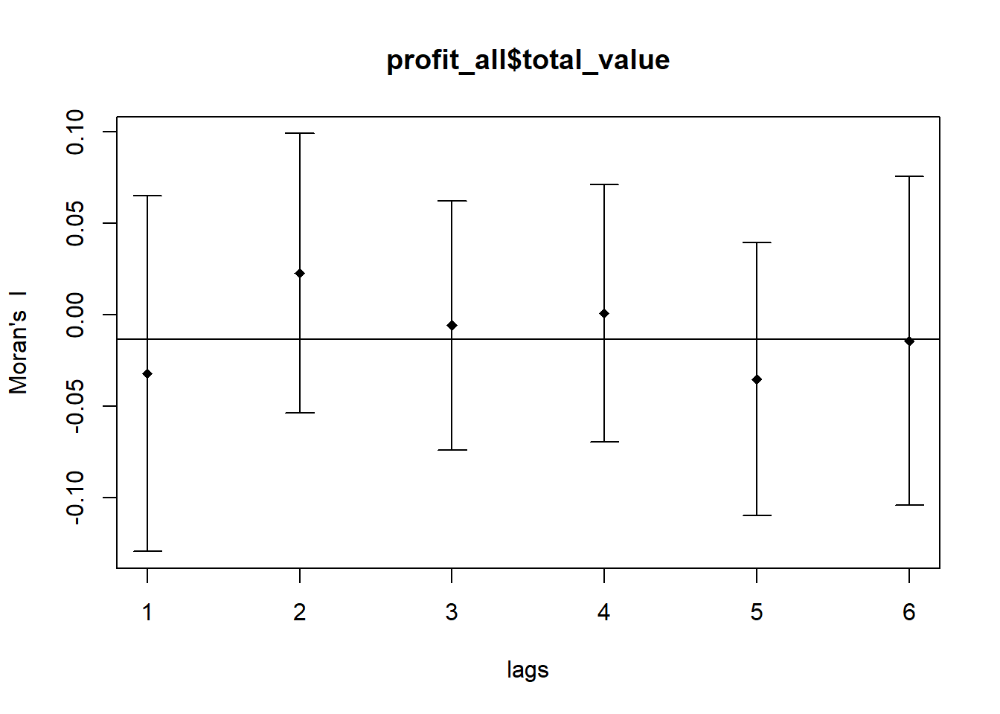
The plot above may not allow us to provide complete interpretation. This is because not all autocorrelation values are statistically significant. Hence, it is important for us to examine the full analysis report by printing out the analysis results as in the code chunk below.
print(MI_corr)Spatial correlogram for profit_all$total_value
method: Moran's I
estimate expectation variance standard deviate Pr(I) two sided
1 (76) -0.03205969 -0.01333333 0.00235782 -0.3857 0.6998
2 (76) 0.02283882 -0.01333333 0.00145669 0.9477 0.3433
3 (76) -0.00567403 -0.01333333 0.00115681 0.2252 0.8218
4 (76) 0.00094147 -0.01333333 0.00123597 0.4060 0.6847
5 (76) -0.03501598 -0.01333333 0.00139573 -0.5804 0.5617
6 (76) -0.01421328 -0.01333333 0.00201552 -0.0196 0.9844From above, we can conclude that there is NO spatial autocorrelation.
We implement the sp.correlogram() of spdep package is used to compute a 6-lag spatial correlogram of total_value, profit. The global spatial autocorrelation used in Geary’s C. The plot() of base Graph is then used to plot the output.
GC_corr <- sp.correlogram(wm_q_pro_all,
profit_all$total_value,
order=6,
method="C",
style="W", zero.policy = TRUE)
plot(GC_corr)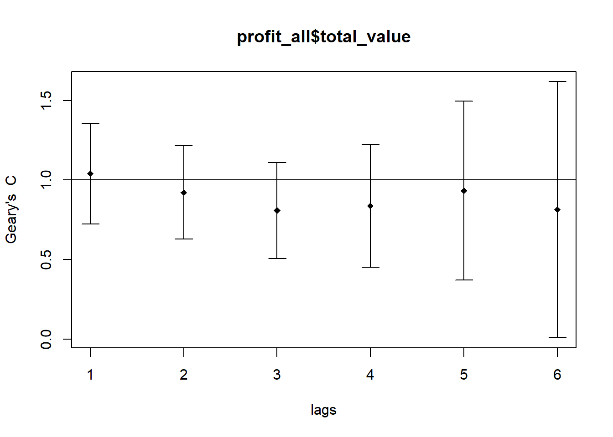
Similar to the step done for Moran’s I, we will print out the analysis report by using the code chunk below.
print(GC_corr)Spatial correlogram for profit_all$total_value
method: Geary's C
estimate expectation variance standard deviate Pr(I) two sided
1 (76) 1.040950 1.000000 0.025084 0.2586 0.7960
2 (76) 0.921568 1.000000 0.021602 -0.5336 0.5936
3 (76) 0.808553 1.000000 0.022887 -1.2655 0.2057
4 (76) 0.837863 1.000000 0.037279 -0.8398 0.4010
5 (76) 0.933676 1.000000 0.079390 -0.2354 0.8139
6 (76) 0.814216 1.000000 0.161791 -0.4619 0.6442Indeed, our findings are reinforced.
2.4.3 Local Indicators of Spatial Association
Local Indicators of Spatial Association or LISA are statistics that evaluate the existence of clusters and/or outliers in the spatial arrangement of a given variable. For instance if we are studying distribution of profits from tourism across Thailand, local clusters in profit mean that there are counties that have higher or lower rates than is to be expected by chance alone; that is, the values occurring are above or below those of a random distribution in space.
2.4.3.1 Computing Local Moran’s I
We implement the localmoran() function of spdep compute the local Moran’s I statistic. This function helps us compute li values, given a set of zi values and a listw object providing neighbor weighting information for the polygon associated with the zi values.
We compute Local Moran’s I for Profits from Tourism at the County Level
fips <- order(profit_all$province_eng)
localMI <- localmoran(profit_all$total_value, rswm_q_pro_all)
head(localMI) Ii E.Ii Var.Ii Z.Ii Pr(z != E(Ii))
1 0.07083095 -0.0010590403 0.026429162 0.4422082 0.658338578
2 0.05716301 -0.0010121113 0.018684887 0.4255906 0.670406191
3 -1.83799857 -0.7673501158 2.138319789 -0.7321677 0.464066214
4 0.06881951 -0.0009985640 0.024921436 0.4422638 0.658298357
5 0.04116995 -0.0006581714 0.009588946 0.4271524 0.669268309
6 -0.22456653 -0.0006523001 0.005688692 -2.9687626 0.002990015localmoran() function returns a matrix of values whose columns are:
Ii: the local Moran’s I statistics
E.Ii: the expectation of local moran statistic under the randomisation hypothesis
Var.Ii: the variance of local moran statistic under the randomisation hypothesis
Z.Ii:the standard deviate of local moran statistic
Pr(): the p-value of local moran statistic
We now use the printCoefmat() to display the content of the local Moran matrix that we created.
printCoefmat(data.frame(
localMI[fips,],
row.names=profit_all$province_eng[fips]),
check.names=FALSE) Ii E.Ii Var.Ii Z.Ii
Amnat Charoen 7.0831e-02 -1.0590e-03 2.6429e-02 4.4221e-01
Ang Thong 5.7163e-02 -1.0121e-03 1.8685e-02 4.2559e-01
Bangkok -1.8380e+00 -7.6735e-01 2.1383e+00 -7.3217e-01
Bueng Kan 6.8820e-02 -9.9856e-04 2.4921e-02 4.4226e-01
Buri Ram 4.1170e-02 -6.5817e-04 9.5889e-03 4.2715e-01
Chachoengsao -2.2457e-01 -6.5230e-04 5.6887e-03 -2.9688e+00
Chai Nat 6.8679e-02 -9.8407e-04 1.8168e-02 5.1683e-01
Chaiyaphum 3.8360e-02 -9.2325e-04 1.7046e-02 3.0088e-01
Chanthaburi -4.8146e-02 -5.0560e-04 7.3673e-03 -5.5504e-01
Chiang Mai -1.3450e-01 -9.0097e-03 1.3017e-01 -3.4783e-01
Chiang Rai 1.3390e-02 -1.9489e-04 4.8679e-03 1.9471e-01
Chon Buri -2.5218e-01 -4.2017e-02 1.0056e+00 -2.0958e-01
Chumphon -2.3465e-02 -6.6103e-04 1.6503e-02 -1.7751e-01
Kalasin 6.1887e-02 -1.0037e-03 1.2010e-02 5.7386e-01
Kamphaeng Phet 6.2087e-02 -9.5084e-04 1.3849e-02 5.3567e-01
Kanchanaburi -1.0748e-02 -2.7607e-05 4.0246e-04 -5.3439e-01
Khon Kaen 2.4471e-02 -1.6317e-04 1.2469e-03 6.9763e-01
Krabi 6.4741e-03 -2.3556e-03 4.3430e-02 4.2370e-02
Lampang 1.0066e-02 -7.0044e-04 7.0835e-03 1.2792e-01
Lamphun -3.4566e-02 -9.4275e-04 2.3530e-02 -2.1920e-01
Loei 4.6521e-02 -7.3364e-04 8.7809e-03 5.0429e-01
Lop Buri 4.5364e-02 -6.6945e-04 5.8381e-03 6.0247e-01
Mae Hong Son -7.0051e-02 -6.7594e-04 2.5659e-02 -4.3309e-01
Maha Sarakham 6.3128e-02 -1.0061e-03 1.4653e-02 5.2982e-01
Mukdahan 6.8489e-02 -8.3509e-04 9.9942e-03 6.9345e-01
Nakhon Nayok 4.1990e-02 -6.1097e-04 8.9017e-03 4.5153e-01
Nakhon Pathom -2.1489e-01 -6.8217e-04 6.8989e-03 -2.5790e+00
Nakhon Phanom 6.8047e-02 -8.8800e-04 2.2165e-02 4.6303e-01
Nakhon Ratchasima 1.0769e-02 -3.3343e-05 2.9096e-04 6.3328e-01
Nakhon Sawan 5.8511e-02 -7.2892e-04 6.3564e-03 7.4303e-01
Nakhon Si Thammarat -1.5159e-02 -2.6910e-04 3.9221e-03 -2.3775e-01
Nan 6.5779e-02 -8.1506e-04 2.0345e-02 4.6688e-01
Narathiwat 7.0909e-02 -9.3157e-04 3.5354e-02 3.8208e-01
Nong Bua Lam Phu 4.9407e-02 -1.0648e-03 2.6572e-02 3.0963e-01
Nong Khai 5.4551e-02 -7.0367e-04 1.2995e-02 4.8472e-01
Nonthaburi -4.2360e-01 -7.5938e-04 1.4023e-02 -3.5708e+00
Pathum Thani -2.8299e-01 -8.5849e-04 1.0274e-02 -2.7834e+00
Pattani 3.0330e-02 -1.0189e-03 2.5429e-02 1.9659e-01
Phangnga 5.3596e-03 -1.1310e-05 2.8255e-04 3.1952e-01
Phatthalung 2.2537e-02 -9.0214e-04 1.6657e-02 1.8161e-01
Phayao 4.1272e-02 -9.3588e-04 1.7279e-02 3.2110e-01
Phetchabun 4.2065e-02 -4.8503e-04 4.9061e-03 6.0747e-01
Phetchaburi -7.0185e-03 -6.6598e-05 1.6636e-03 -1.7044e-01
Phichit 5.9974e-02 -9.6542e-04 1.7824e-02 4.5646e-01
Phitsanulok 4.6818e-02 -4.7233e-04 5.6548e-03 6.2888e-01
Phra Nakhon Si Ayutthaya 2.3781e-02 -1.3274e-04 1.3431e-03 6.5251e-01
Phrae 6.5858e-02 -8.9708e-04 1.3066e-02 5.8399e-01
Phuket 0.0000e+00 0.0000e+00 0.0000e+00 NaN
Prachin Buri 4.1941e-02 -7.2836e-04 1.3450e-02 3.6792e-01
Prachuap Khiri Khan -1.4440e-02 -4.6886e-04 1.7802e-02 -1.0471e-01
Ranong -1.5809e-02 -8.5754e-04 2.1405e-02 -1.0219e-01
Ratchaburi 3.0398e-02 -7.8960e-04 1.1502e-02 2.9080e-01
Rayong -3.7305e-03 -2.8939e-07 1.0993e-05 -1.1251e+00
Roi Et 7.3169e-02 -9.7817e-04 1.1705e-02 6.8535e-01
Sa Kaeo 4.1677e-02 -6.6356e-04 9.6674e-03 4.3063e-01
Sakon Nakhon 6.3231e-02 -8.7858e-04 1.0514e-02 6.2523e-01
Samut Prakan -8.4569e-01 -6.8479e-04 2.5995e-02 -5.2410e+00
Samut Sakhon -4.6728e-01 -9.5877e-04 1.7701e-02 -3.5050e+00
Samut Songkhram 3.5465e-02 -7.5637e-04 1.8881e-02 2.6360e-01
Saraburi 3.5689e-02 -5.8367e-04 8.5042e-03 3.9334e-01
Satun 1.7280e-02 -4.7190e-04 1.1783e-02 1.6353e-01
Si Sa Ket 6.8692e-02 -9.4121e-04 1.7377e-02 5.2823e-01
Sing Buri 6.8496e-02 -1.0164e-03 1.4803e-02 5.7134e-01
Songkhla -4.3694e-02 -4.9426e-04 7.2021e-03 -5.0904e-01
Sukhothai 5.9296e-02 -8.2070e-04 9.8221e-03 6.0659e-01
Suphan Buri 4.3527e-02 -6.3974e-04 6.4700e-03 5.4909e-01
Surat Thani -1.2941e-02 -1.9060e-03 2.7733e-02 -6.6261e-02
Surin 6.6997e-02 -8.7318e-04 1.6122e-02 5.3452e-01
Tak 2.0387e-02 -5.7672e-04 4.4053e-03 3.1585e-01
Trang 8.7996e-03 -5.5674e-04 1.0283e-02 9.2268e-02
Trat 2.0975e-02 -1.5065e-04 1.1598e-02 1.9616e-01
Ubon Ratchathani 6.0051e-02 -6.1752e-04 1.5418e-02 4.8860e-01
Udon Thani 4.0434e-02 -3.9636e-04 4.7456e-03 5.9270e-01
Uthai Thani 4.8347e-02 -9.6439e-04 1.4046e-02 4.1607e-01
Uttaradit 6.2903e-02 -9.2454e-04 1.7070e-02 4.8853e-01
Yala 2.9763e-02 -8.5365e-04 2.1308e-02 2.0974e-01
Yasothon 7.2485e-02 -1.0348e-03 1.5070e-02 5.9889e-01
Pr.z....E.Ii..
Amnat Charoen 0.6583
Ang Thong 0.6704
Bangkok 0.4641
Bueng Kan 0.6583
Buri Ram 0.6693
Chachoengsao 0.0030
Chai Nat 0.6053
Chaiyaphum 0.7635
Chanthaburi 0.5789
Chiang Mai 0.7280
Chiang Rai 0.8456
Chon Buri 0.8340
Chumphon 0.8591
Kalasin 0.5661
Kamphaeng Phet 0.5922
Kanchanaburi 0.5931
Khon Kaen 0.4854
Krabi 0.9662
Lampang 0.8982
Lamphun 0.8265
Loei 0.6141
Lop Buri 0.5469
Mae Hong Son 0.6649
Maha Sarakham 0.5962
Mukdahan 0.4880
Nakhon Nayok 0.6516
Nakhon Pathom 0.0099
Nakhon Phanom 0.6433
Nakhon Ratchasima 0.5266
Nakhon Sawan 0.4575
Nakhon Si Thammarat 0.8121
Nan 0.6406
Narathiwat 0.7024
Nong Bua Lam Phu 0.7568
Nong Khai 0.6279
Nonthaburi 0.0004
Pathum Thani 0.0054
Pattani 0.8441
Phangnga 0.7493
Phatthalung 0.8559
Phayao 0.7481
Phetchabun 0.5435
Phetchaburi 0.8647
Phichit 0.6481
Phitsanulok 0.5294
Phra Nakhon Si Ayutthaya 0.5141
Phrae 0.5592
Phuket NaN
Prachin Buri 0.7129
Prachuap Khiri Khan 0.9166
Ranong 0.9186
Ratchaburi 0.7712
Rayong 0.2606
Roi Et 0.4931
Sa Kaeo 0.6667
Sakon Nakhon 0.5318
Samut Prakan 0.0000
Samut Sakhon 0.0005
Samut Songkhram 0.7921
Saraburi 0.6941
Satun 0.8701
Si Sa Ket 0.5973
Sing Buri 0.5678
Songkhla 0.6107
Sukhothai 0.5441
Suphan Buri 0.5829
Surat Thani 0.9472
Surin 0.5930
Tak 0.7521
Trang 0.9265
Trat 0.8445
Ubon Ratchathani 0.6251
Udon Thani 0.5534
Uthai Thani 0.6774
Uttaradit 0.6252
Yala 0.8339
Yasothon 0.54922.4.3.1.1 Mapping the Local Moran’s I
Before we map the local Moran’s I map, it is wise to append the local Moran’s data-frame (localMI) onto the profit SpatialPolygonDataFrame.
profit.localMI <- cbind(profit_all,localMI) %>%
rename(Pr.Ii = Pr.z....E.Ii..)We now make use of the tmap package and its choropleth mapping functions to plot the local Moran’s I values.
tm_shape(profit.localMI) +
tm_fill(col = "Ii",
style = "pretty",
palette = "RdBu",
title = "local moran statistics") +
tm_borders(alpha = 0.5)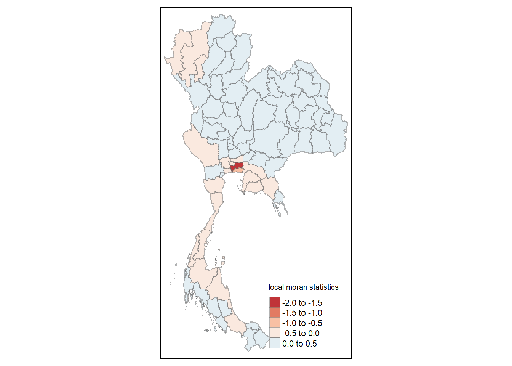
The Choropleth reveals the presence of both positive, as well as negative I values. This indicates that there are varying levels of spatial autocorrelation, however, we must examine the p-values for these I values to check for statistical significance.
We use the tmap package to draw a choropleth map of Moran’s I p-values.
tm_shape(profit.localMI) +
tm_fill(col = "Pr.Ii",
breaks=c(-Inf, 0.001, 0.01, 0.05, 0.1, Inf),
palette="-Blues",
title = "local Moran's I p-values") +
tm_borders(alpha = 0.5)
We map both of the above plots side by side for comparison.
localMI.map <- tm_shape(profit.localMI) +
tm_fill(col = "Ii",
style = "pretty",
title = "local moran statistics") +
tm_borders(alpha = 0.5)
pvalue.map <- tm_shape(profit.localMI) +
tm_fill(col = "Pr.Ii",
breaks=c(-Inf, 0.001, 0.01, 0.05, 0.1, Inf),
palette="-Blues",
title = "local Moran's I p-values") +
tm_borders(alpha = 0.5)
tmap_arrange(localMI.map, pvalue.map, asp=1, ncol=2)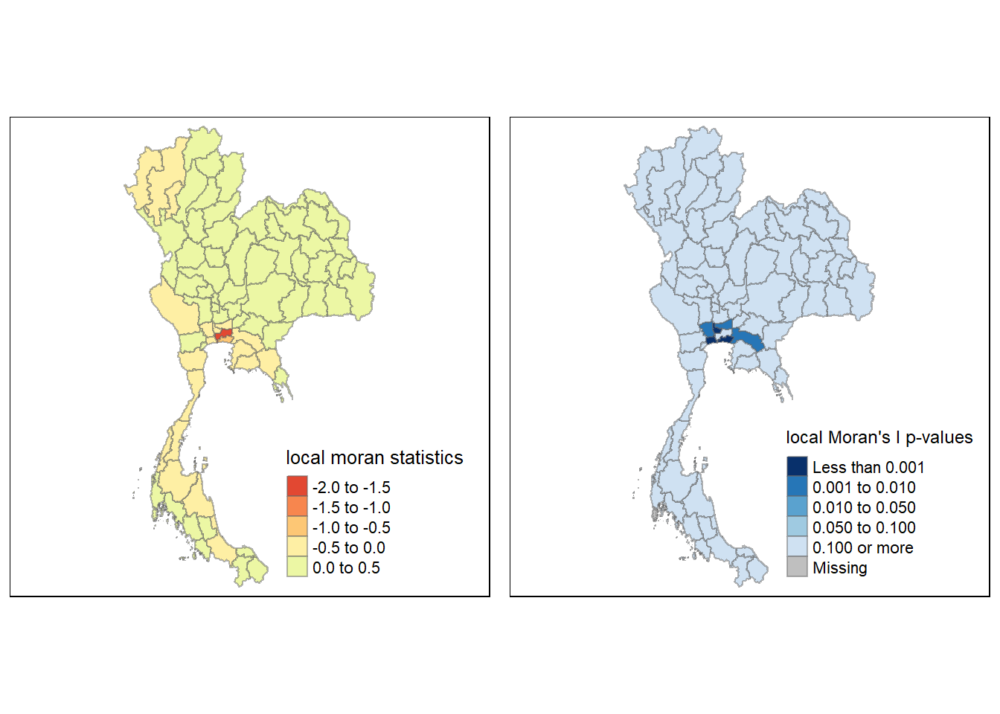
2.4.3.2 Creating a LISA Cluster Map
The LISA Cluster Map shows the significant locations color coded by type of spatial autocorrelation.
Before we can generate the LISA cluster map, we must plot the Moran scatterplot.
2.4.3.2.1 Plotting a Moran Scatterplot
The Moran Scatterplot depicts the relationship between the values of the chosen attribute at each location and the average value of the same attribute at neighboring locations.
We will implement the moran.plot() function of the spdep package to create the plot.
nci <- moran.plot(profit_all$total_value, rswm_q_pro_all,
labels=as.character(profit_all$province_eng),
xlab="Total Value",
ylab="Spatially Lag Total Value")Notice that the plot is split in 4 quadrants.
The top right corner belongs to areas that have high profits and are surrounded by other areas that have the average level of profits.
2.4.3.2.2 Plotting Moran Scatterplot with Standardised variable
We first implement the scale() function to center and scale the variable. Here, centering is done by subtracting the mean (omitting NAs) from the corresponding columns, and scaling is done by dividing the (centered) variable by their standard deviations.
profit_all$Z.value <- scale(profit_all$total_value) %>%
as.vector Note that the as.vector() function is added so that we get a vector as the output. This allows us to map it neatly into our data-frame.
We can now plot the Moran scatterplot again by using the code chunk below.
nci2 <- moran.plot(profit_all$Z.value, rswm_q_pro_all,
labels=as.character(profit_all$province_eng),
xlab="z-Value",
ylab="Spatially Lag z-Value")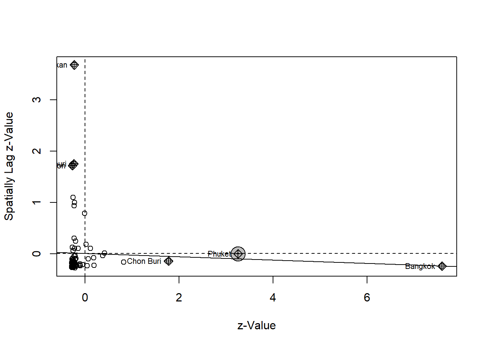
2.4.3.2.3 Preparing LISA Map Classes
We now prepare the data in order to facilitate plotting a LISA Cluster Map.
quadrant <- vector(mode="numeric",length=nrow(localMI))Now, we will derive the spatially lagged variable of interest (i.e: GDPPC) and center the spatially lagged variable around its mean.
profit_all$`lag Profit` <- lag.listw(rswm_q_pro_all, profit_all$total_value)
DV <- profit_all$`lag Profit` - mean(profit_all$`lag Profit`) # Now, we work on centering the local Moran around the mean.
LM_I <- localMI[,1]
# We set the significance level for the Local Moran in the code chunk below.
signif <- 0.05
# The following code chunk defines the four categories (low-low (1), low-high (2), high-low (3), high-high (4))
quadrant[DV <0 & LM_I>0] <- 1
quadrant[DV >0 & LM_I<0] <- 2
quadrant[DV <0 & LM_I<0] <- 3
quadrant[DV >0 & LM_I>0] <- 4
# Finally, we place the non-significant Moran in the category 0.
quadrant[localMI[,5]>signif] <- 02.4.3.2.3 LISA Map
We can now implement functions of the tmap package to plot the LISA Map.
profit.localMI$quadrant <- quadrant
colors <- c("#ffffff", "#2c7bb6", "#abd9e9", "#fdae61", "#d7191c")
clusters <- c("insignificant", "low-low", "low-high", "high-low", "high-high")
tm_shape(profit.localMI) +
tm_fill(col = "quadrant",
style = "cat",
palette = colors[c(sort(unique(quadrant)))+1],
labels = clusters[c(sort(unique(quadrant)))+1],
popup.vars = c("")) +
tm_view(set.zoom.limits = c(11,17)) +
tm_borders(alpha=0.5)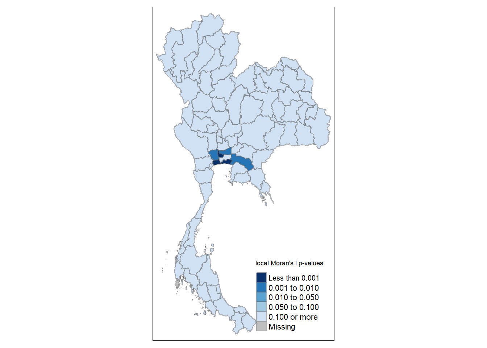
In the interest of easier visualization and interpretation, we plot the Total Values and their corresponding quadrants next to each other.
profits <- tm_shape(profit_all) +
tm_polygons("total_value", style = "jenks", palette = "Blues", title = "Total Value") +
tm_layout(legend.outside = TRUE)
profit.localMI$quadrant <- quadrant
colors <- c("#ffffff", "#2c7bb6", "#abd9e9", "#fdae61", "#d7191c")
clusters <- c("insignificant", "low-low", "low-high", "high-low", "high-high")
LISAmap <- tm_shape(profit.localMI) +
tm_fill(col = "quadrant",
style = "cat",
palette = colors[c(sort(unique(quadrant)))+1],
labels = clusters[c(sort(unique(quadrant)))+1],
popup.vars = c("")) +
tm_view(set.zoom.limits = c(11,17)) +
tm_borders(alpha=0.5)
tmap_arrange(profits, LISAmap,
asp=1, ncol=2)
2.4.3.3 Hot and Cold Spot Analysis
We now use localized spatial statistics to detect hot and cold spot areas.
“Hot Spot’ is generally used across various disciplines to describe a region or value that is higher relative to its surroundings.
2.4.3.3.1 Getis and Ord’s G-Statistics
An alternative spatial statistic used to detect spatial anomalies is the Getis-Ord G-statistic (Getis and Ord, 1972; Ord and Getis, 1995). This method examines spatial relationships within a defined proximity to identify clusters of high or low values. Statistically significant hotspots are areas where high values are spatially clustered, meaning that not only do these areas have high values, but their neighboring areas also exhibit similarly high values.
The analysis involves three key steps:
Deriving the spatial weight matrix: This defines the spatial relationships between areas, specifying which locations are considered neighbors based on proximity. Computing the Gi statistic: This step calculates the G-statistic for each location, identifying regions where values are significantly higher or lower than expected. Mapping the Gi statistics: The results are visualized to reveal spatial patterns of high-value clusters (hotspots) and low-value clusters (cold spots). This approach is useful for identifying localized patterns of spatial clustering and detecting significant anomalies in the data.
2.4.3.3.2 Deriving Distance Based Weight Matrix
We start by defining a new set of neighbors. While the spatial autocorrelation considered units which shared borders, for Getis-Ord, we will define the neighbors based on distance.
There are two types of distance-based proximity matrices:
Fixed Distance Weight Matrix
Adaptive Distance Weight Matrix
2.4.3.3.2.1 Deriving distance-based weight matrix
Before creating our connectivity graph, we need to assign a point to each polygon. This requires more than simply running st_centroid() on the us.bound spatial object. Specifically, we need to extract the coordinates into a separate data frame. We have already done this previously and have the object coords_all
For more detailed information, you can refer to the map documentation here.
wm62_lw_profit <- nb2listw(wm_d62_pro_all, style = 'B')
summary(wm62_lw_profit)Characteristics of weights list object:
Neighbour list object:
Number of regions: 77
Number of nonzero links: 350
Percentage nonzero weights: 5.903188
Average number of links: 4.545455
2 disjoint connected subgraphs
Link number distribution:
1 2 3 4 5 6 7 8 9 10 11 12 13 14
8 15 15 13 6 4 2 1 4 4 1 1 2 1
8 least connected regions:
11 13 21 23 29 50 69 71 with 1 link
1 most connected region:
37 with 14 links
Weights style: B
Weights constants summary:
n nn S0 S1 S2
B 77 5929 350 700 9560fips <- order(profit_all$province_eng)
gi.fixed_profit <- localG(profit_all$total_value, wm62_lw_profit)
gi.fixed_profit [1] -0.52581301 1.72204198 0.32507207 -0.35160364 -0.22202539 2.81711622
[7] -0.63963877 -0.21957271 0.55503719 -0.40437456 -0.26339386 2.95575400
[13] -0.25664198 -0.54479866 -0.57279423 -0.34656392 -0.48275821 1.53862423
[19] 0.16843044 0.41726596 -0.28580881 -0.63106923 0.81941327 -0.39038265
[25] -0.63470129 1.88026185 1.85263552 -0.36591874 -0.22285852 -0.67447118
[31] 0.16663889 -0.37806669 -0.38207690 -0.38920403 -0.43191914 1.45185155
[37] 1.35082617 -0.19658983 2.37283918 -0.18161089 -0.09495497 -0.42615323
[43] -0.28501260 -0.45645978 -0.50084879 1.41225148 -0.51135981 0.41109227
[49] 0.26863596 0.07316501 0.10594488 -0.42146550 0.79540880 -0.63354645
[55] -0.38548695 -0.50650962 2.55350535 2.15204901 2.29392754 2.02716769
[61] -0.16352985 -0.78617456 -0.34053906 -0.41978322 -0.50598386 -0.66718360
[67] 0.03763721 -0.35227572 -0.26988232 -0.09226794 -0.19616145 -0.39394926
[73] -0.45414601 -0.52573156 -0.41343694 -0.38989571 -0.47661388
attr(,"internals")
Gi E(Gi) V(Gi) Z(Gi) Pr(z != E(Gi))
[1,] 0.0059294160 0.05263158 0.007888807 -0.52581301 0.599018136
[2,] 0.3858055207 0.14473684 0.019597204 1.72204198 0.085061913
[3,] 0.1932727927 0.15789474 0.011844279 0.32507207 0.745126528
[4,] 0.0039199342 0.02631579 0.004057220 -0.35160364 0.725135534
[5,] 0.0121380628 0.02631579 0.004077631 -0.22202539 0.824294114
[6,] 0.4815470992 0.11842105 0.016615189 2.81711622 0.004845699
[7,] 0.0184957073 0.09210526 0.013243380 -0.63963877 0.522407472
[8,] 0.0123226101 0.02631579 0.004061403 -0.21957271 0.826203944
[9,] 0.1207543062 0.06578947 0.009806762 0.55503719 0.578869221
[10,] 0.0066350187 0.03947368 0.006594826 -0.40437456 0.685937304
[11,] 0.0009921345 0.01315789 0.002133375 -0.26339386 0.792247020
[12,] 0.4213553383 0.07894737 0.013419958 2.95575400 0.003119058
[13,] 0.0014919135 0.01315789 0.002066270 -0.25664198 0.797455162
[14,] 0.0042254150 0.05263158 0.007894584 -0.54479866 0.585892002
[15,] 0.0092649289 0.06578947 0.009738159 -0.57279423 0.566784026
[16,] 0.0039057091 0.02631579 0.004181385 -0.34656392 0.728918959
[17,] 0.0017737008 0.03947368 0.006098499 -0.48275821 0.629267429
[18,] 0.2224029783 0.06578947 0.010360800 1.53862423 0.123896059
[19,] 0.0525524825 0.03947368 0.006029684 0.16843044 0.866244663
[20,] 0.0529041930 0.02631579 0.004060305 0.41726596 0.676483887
[21,] 0.0001736036 0.01315789 0.002063884 -0.28580881 0.775024563
[22,] 0.0193132412 0.09210526 0.013304960 -0.63106923 0.527995260
[23,] 0.0504008402 0.01315789 0.002065770 0.81941327 0.412550669
[24,] 0.0092272618 0.03947368 0.006002982 -0.39038265 0.696253617
[25,] 0.0031044434 0.06578947 0.009754139 -0.63470129 0.525623255
[26,] 0.3852284083 0.13157895 0.018198317 1.88026185 0.060072400
[27,] 0.3813548574 0.13157895 0.018176955 1.85263552 0.063934618
[28,] 0.0029903222 0.02631579 0.004063417 -0.36591874 0.714425715
[29,] 0.0029442098 0.01315789 0.002100421 -0.22285852 0.823645619
[30,] 0.0064343489 0.07894737 0.011558599 -0.67447118 0.500011800
[31,] 0.0675325754 0.05263158 0.007996094 0.16663889 0.867654193
[32,] 0.0022032196 0.02631579 0.004067712 -0.37806669 0.705381053
[33,] 0.0019677677 0.02631579 0.004060933 -0.38207690 0.702404324
[34,] 0.0180641784 0.05263158 0.007888216 -0.38920403 0.697125223
[35,] 0.0059355717 0.03947368 0.006029376 -0.43191914 0.665800184
[36,] 0.3889691029 0.17105263 0.022528677 1.45185155 0.146542885
[37,] 0.3927872634 0.18421053 0.023841458 1.35082617 0.176751123
[38,] 0.0242434216 0.03947368 0.006001954 -0.19658983 0.844148528
[39,] 0.2259809613 0.03947368 0.006178100 2.37283918 0.017651948
[40,] 0.0364839208 0.05263158 0.007905609 -0.18161089 0.855888103
[41,] 0.0202649221 0.02631579 0.004060690 -0.09495497 0.924350594
[42,] 0.0063208919 0.03947368 0.006052136 -0.42615323 0.669996196
[43,] 0.0268929985 0.05263158 0.008155321 -0.28501260 0.775634492
[44,] 0.0120639478 0.05263158 0.007898675 -0.45645978 0.648059388
[45,] 0.0079439193 0.05263158 0.007960896 -0.50084879 0.616477543
[46,] 0.3844383850 0.17105263 0.022830045 1.41225148 0.157875928
[47,] 0.0071631695 0.05263158 0.007906174 -0.51135981 0.609099135
[48,] 0.0552205480 0.02631579 0.004943791 0.41109227 0.681004878
[49,] 0.1078287958 0.07894737 0.011558701 0.26863596 0.788209840
[50,] 0.0165472431 0.01315789 0.002145979 0.07316501 0.941674808
[51,] 0.0330707115 0.02631579 0.004065189 0.10594488 0.915626086
[52,] 0.0241502378 0.06578947 0.009760711 -0.42146550 0.673415197
[53,] 0.1018968574 0.03947368 0.006159010 0.79540880 0.426375744
[54,] 0.0032814385 0.06578947 0.009734525 -0.63354645 0.526376860
[55,] 0.0095313437 0.03947368 0.006033261 -0.38548695 0.699876671
[56,] 0.0075885184 0.05263158 0.007908250 -0.50650962 0.612498940
[57,] 0.4758402384 0.13157895 0.018176189 2.55350535 0.010664464
[58,] 0.3951862327 0.11842105 0.016539356 2.15204901 0.031393494
[59,] 0.3858808566 0.10526316 0.014964793 2.29392754 0.021794661
[60,] 0.3798739669 0.11842105 0.016634418 2.02716769 0.042645266
[61,] 0.0267502119 0.03947368 0.006053649 -0.16352985 0.870101275
[62,] 0.0258430177 0.13157895 0.018088694 -0.78617456 0.431765230
[63,] 0.0046162337 0.02631579 0.004060391 -0.34053906 0.733450616
[64,] 0.0062364667 0.03947368 0.006269013 -0.41978322 0.674643821
[65,] 0.0076163930 0.05263158 0.007914888 -0.50598386 0.612867981
[66,] 0.0324122299 0.11842105 0.016618633 -0.66718360 0.504654867
[67,] 0.0560761530 0.05263158 0.008375989 0.03763721 0.969976936
[68,] 0.0038576245 0.02631579 0.004064275 -0.35227572 0.724631498
[69,] 0.0008813426 0.01315789 0.002069207 -0.26988232 0.787250791
[70,] 0.0444054673 0.05263158 0.007948543 -0.09226794 0.926485158
[71,] 0.0041914071 0.01315789 0.002089380 -0.19616145 0.844483802
[72,] 0.0011511480 0.02631579 0.004080383 -0.39394926 0.693618501
[73,] 0.0041121198 0.03947368 0.006062782 -0.45414601 0.649723737
[74,] 0.0225222310 0.07894737 0.011519063 -0.52573156 0.599074730
[75,] 0.0074231980 0.03947368 0.006009671 -0.41343694 0.679286515
[76,] 0.0014557954 0.02631579 0.004065417 -0.38989571 0.696613664
[77,] 0.0025532004 0.03947368 0.006000693 -0.47661388 0.633637100
attr(,"cluster")
[1] Low Low High Low Low Low Low Low Low High High High Low Low Low
[16] High Low High Low Low Low Low Low Low Low Low Low Low Low Low
[31] Low Low Low Low Low Low Low Low High Low Low Low High Low Low
[46] Low Low High Low High Low Low Low Low Low Low Low Low Low Low
[61] Low Low Low High Low Low High Low Low Low Low Low Low Low Low
[76] Low Low
Levels: Low High
attr(,"gstari")
[1] FALSE
attr(,"call")
localG(x = profit_all$total_value, listw = wm62_lw_profit)
attr(,"class")
[1] "localG"The output of the localG() function is a vector containing G or G* values, with the following attributes: - “gstari”: Indicates whether the G* version of the statistic was used (TRUE or FALSE). - “call”: Stores the function call. - “class”: Set to “localG”, identifying the object type.
The Gi statistic is represented as a Z-score, where larger values signify stronger clustering. The sign of the value indicates the type of cluster: positive values point to high-value clusters (hotspots), while negative values indicate low-value clusters (cold spots).
To merge the Gi values with their corresponding geographic data in the Hunan spatial dataframe, use the following code to join the results to the profit sf object. This allows for the spatial visualization of clusters within the geographic data.
profit.gi <- cbind(profit_all, as.matrix(gi.fixed_profit)) %>%
rename(gstat_fixed = as.matrix.gi.fixed_profit.)the code chunk above actually performs three tasks. First, it convert the output vector (i.e. gi.fixed) into r matrix object by using as.matrix(). Next, cbind() is used to join hunan@data and gi.fixed matrix to produce a new SpatialPolygonDataFrame called hunan.gi. Lastly, the field name of the gi values is renamed to gstat_fixed by using rename().
Gimap <-tm_shape(profit.gi) +
tm_fill(col = "gstat_fixed",
style = "pretty",
palette="-RdBu",
title = "local Gi") +
tm_borders(alpha = 0.5)
tmap_arrange(profits, Gimap, asp=1, ncol=2)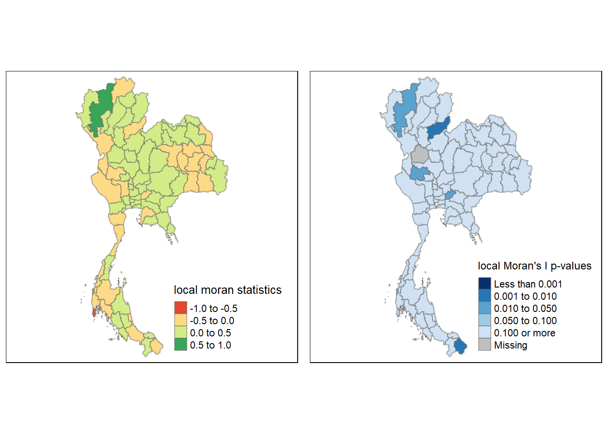
From the above plot, we can infer that ‘hot spots’ tend to be neighboring regions and likewise for the cold spots too. We see high value (hot) clusters in the Central region of Thailand, particularly around Bangkok and the Bangkok Metropolitan Region as well as in the Southern Region, while the majority of the western part of Thailand is ‘cold’.
2.4.3.3.2 Emerging Hot-Spot Analysis
We will now conduct Emerging Hot-spot analysis to see if there are any trends popping up recently.
Emerging Hot Spot Analysis (EHSA) is a spatio-temporal analysis method for revealing and describing how hot spot and cold spot areas evolve over time. The analysis consist of four main steps:
Building a space-time cube,
Calculating Getis-Ord local Gi* statistic for each bin by using an FDR correction,
Evaluating these hot and cold spot trends by using Mann-Kendall trend test,
Categorising each study area location by referring to the resultant trend z-score and p-value for each location with data, and with the hot spot z-score and p-value for each bin.
2.4.3.3.2.1 Space-Time Cube
We now use the spacetime() function of the sfdep package to create a spatio-temporal cube.
Click to show/hide code
# Applying the province name changes to the tourists dataset
tourists$province_eng <- gsub("Nong Bua Lamphu", "Nong Bua Lam Phu", tourists$province_eng)
tourists$province_eng <- gsub("Sisaket", "Si Sa Ket", tourists$province_eng)
tourists$province_eng <- gsub("Phang Nga", "Phangnga", tourists$province_eng)
tourists$province_eng <- gsub("Lopburi", "Lop Buri", tourists$province_eng)
tourists$province_eng <- gsub("Chonburi", "Chon Buri", tourists$province_eng)
tourists$province_eng <- gsub("Chainat", "Chai Nat", tourists$province_eng)
tourists$province_eng <- gsub("Buriram", "Buri Ram", tourists$province_eng)
tourists$province_eng <- gsub("Prachinburi", "Prachin Buri", tourists$province_eng)profit_all_temporal=tourists_temporal%>%filter(variable=='net_profit_all')
# Rename province_eng to ADM1_EN using base R in order to facilitate the creation of the spacetime cube.
names(profit_all_temporal)[names(profit_all_temporal) == "province_eng"] <- "ADM1_EN"
profits_st <- spacetime(profit_all_temporal, province,
.loc_col = "ADM1_EN",
.time_col = "date")To verify if the cube has been create, we implement the is_spacetime_cube() function of the sfdep package as shown in the code chunk below.
is_spacetime_cube(profits_st)[1] TRUEBased on the above output, we can confirm that it has been created as intended.
2.4.3.3.2.2 Deriving Spatial Weights
We implement the below code chunk to identify neighbors and calculate the inverse-distance weights.
profits_nb <- profits_st %>%
activate("geometry") %>%
mutate(nb = include_self(
st_contiguity(geometry)),
wt = st_inverse_distance(nb,
geometry,
scale = 1,
alpha = 1),
.before = 1) %>%
set_nbs("nb") %>%
set_wts("wt")activate()of dplyr package is used to activate the geometry contextmutate()of dplyr package is used to create two new columns nb and wt.Then we will activate the data context again and copy over the nb and wt columns to each time-slice using
set_nbs()andset_wts()- row order is very important so do not rearrange the observations after using
set_nbs()orset_wts().
- row order is very important so do not rearrange the observations after using
2.4.3.3.3 Computing Gi Stats
We can use these new columns to manually calculate the local Gi for each location. We do this by grouping by Year and using the local_gstar_perm() function of the sfdep package. After this, we use the unnest() function to unnest the gi_star column of the newly created gi_starts data.frame.
# Calculate the local G* statistics
gi_stars <- profits_nb %>%
group_by(date) %>%
mutate(gi_star = local_gstar_perm(
value, # Make sure it's numeric
nb, # Neighbors
wt # Weights
)) %>%
tidyr::unnest(gi_star)2.4.3.3.4 Mann-Kendall Test
We the above Gi calculations, we can now conduct the Mann-Kendall test to evaluate each location for a trend.
cbg <- gi_stars %>%
ungroup() %>%
filter(ADM1_EN == "Bangkok") %>%
select(ADM1_EN, date, gi_star)We can now produce a plot by using the ggplot package.
ggplot(data = cbg,
aes(x = date,
y = gi_star)) +
geom_line() +
theme_light()Alternatively, we can also create an interactive plot using the ggplotly() function of the plotly package.
The code chunk below can be used.
p <- ggplot(data = cbg,
aes(x = date,
y = gi_star)) +
geom_line() +
theme_light()
ggplotly(p)We now generate the report for the Mann Kendall Test by implementing the below code chunk.
A Monotonic series or function is one that only increases (or decreases) and never changes direction. So long as the function either stays flat or continues to increase, it is monotonic.
H0: No monotic trend.
H1: Monotonic trend is present
Tau ranges between -1 and 1 where:
-1 is a perfectly decreasing series.
1 is a perfectly increasing series.
We implement the below code chunk to obtain the required report.
cbg %>%
summarise(mk = list(
unclass(
Kendall::MannKendall(gi_star)))) %>%
tidyr::unnest_wider(mk)# A tibble: 1 × 5
tau sl S D varS
<dbl> <dbl> <dbl> <dbl> <dbl>
1 -0.118 0.228 -145 1225 14292.Note that slin the output above is the p-value in this situation.
2.4.3.3.5 Mann-Kendall Test Data-Frame
We can perform the above steps for every location by using the group_by() function of the dplyr package.
ehsa <- gi_stars %>%
group_by(ADM1_EN) %>%
summarise(mk = list(
unclass(
Kendall::MannKendall(gi_star)))) %>%
tidyr::unnest_wider(mk)
head(ehsa)# A tibble: 6 × 6
ADM1_EN tau sl S D varS
<chr> <dbl> <dbl> <dbl> <dbl> <dbl>
1 Amnat Charoen -0.138 0.160 -169 1225 14292.
2 Ang Thong -0.429 0.0000117 -525 1225 14292.
3 Bangkok -0.118 0.228 -145 1225 14292.
4 Bueng Kan -0.0971 0.324 -119 1225 14292.
5 Buriram 0.0204 0.841 25 1225 14292.
6 Chachoengsao 0.00898 0.933 11 1225 14292.We can sort the data-frame to highlight emerging hot/cold spots by implementing the below code chunk.
emerging <- ehsa %>%
arrange(sl, abs(tau)) %>%
slice(1:10)
head(emerging)# A tibble: 6 × 6
ADM1_EN tau sl S D varS
<chr> <dbl> <dbl> <dbl> <dbl> <dbl>
1 Phichit 0.540 0 661 1225 14292.
2 Mae Hong Son 0.527 0.000000119 645 1225 14292.
3 Chiang Rai 0.528 0.000000119 647 1225 14292.
4 Saraburi -0.510 0.000000179 -625 1225 14292.
5 Ratchaburi -0.499 0.000000335 -611 1225 14292.
6 Phitsanulok 0.471 0.00000143 577 1225 14292.2.4.3.3.6 Emerging Hot-Spot Analysis
We now perform EHSA by using the emerging_hotspot_analysis() function of the sfdep package.
It takes a spacetime object x (i.e: profit_st), and the quoted name of the variable of interest (i.e. GDPPC) as the .var argument.
The k argument is used to specify the number of time lags which is set to 1 by default.
nsim is number of simulations to be performed.
ehsa <- emerging_hotspot_analysis(
x = profits_st,
.var = "value",
k = 1,
nsim = 99
)We now implement various ggplot2 functions to reveal the distributions of EHSA classes as a bar chart.
ggplot(data = ehsa,
aes(x = classification)) +
geom_bar()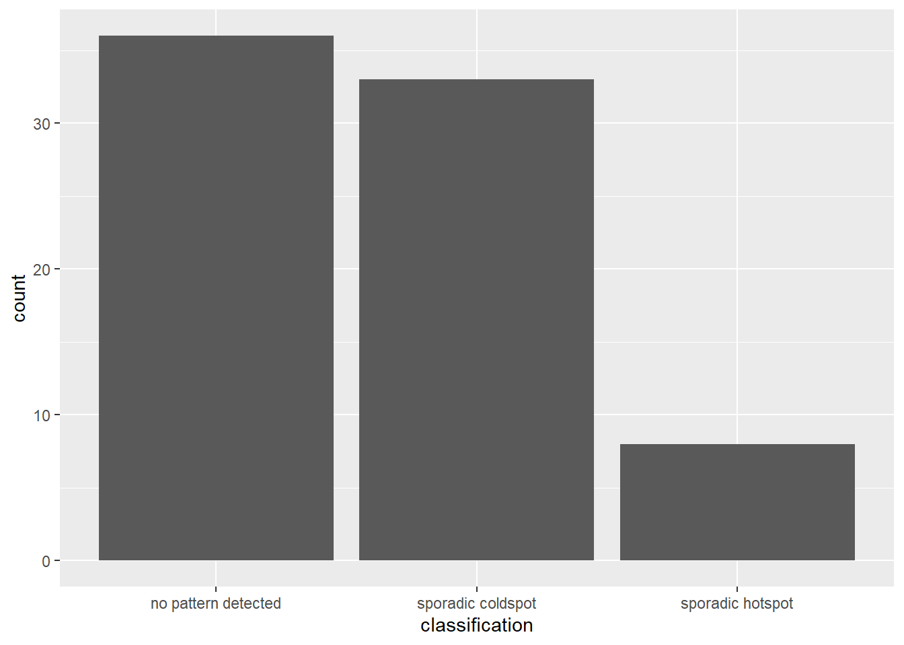
We can proceed with Visualizing EHSA.
thai_ehsa <- province %>%
left_join(ehsa,
by = join_by(ADM1_EN == location))We can now implement functions of the tmap package to produce a visualization for the above.
ehsa_sig <- thai_ehsa %>%
filter(p_value < 0.1)
tmap_mode("plot")
tm_shape(thai_ehsa) +
tm_polygons() +
tm_borders(alpha = 0.5) +
tm_shape(ehsa_sig) +
tm_fill("classification") +
tm_borders(alpha = 0.4)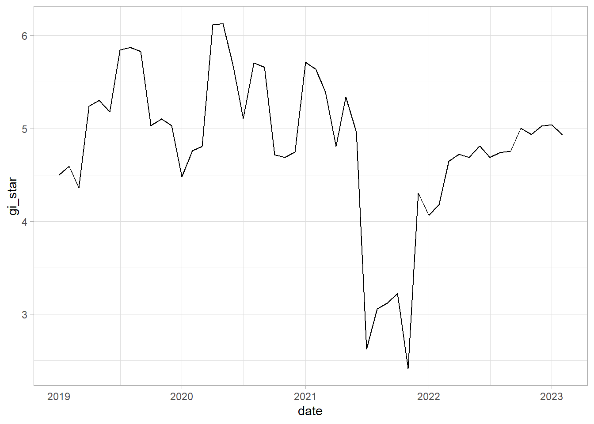
We can further look at this in greater detail by each location as well if required.